Introduction
A stream is an unordered list of objects. A stream can have objects inserted into it and it can have objects removed from it. A stream function \(f\) has both an incoming stream and an outgoing stream. The incoming stream is the stream of objects that have yet to be processed (removed) by \(f\) and the outgoing stream is the stream of objects that have already been generated (inserted) by \(f\). The type of objects incoming to \(f\) can be different from the type of objects outgoing from \(f\). For instance, the stream function \(f: X \rightarrow Y^*\) maps one \(X\)-object from the incoming stream to zero or more \(Y\)-objects in the outgoing stream.[^2] This simple foundation is developed into an algebraic structure called a stream ring. A stream ring is a set of coefficients and functions along with additive and multiplicative operators used for writing expressions that are isomorphic to an acyclic, directed graph of coefficient-prefixed functions connected by streams.
This article will discuss ring theory, establish the presented stream structure as a ring, demonstrate common stream ring patterns, and then use the axioms and theorems of stream ring theory to prove that the developed algebra is Turing Complete.
The Definition of a Ring
A ring is a set \(A\) with two binary operators \(+\) and \(\cdot\) called "addition" and "multiplication" respectively and is denoted \(\langle A, +, \cdot \rangle\) [@algebra:gallian2002]. The substructure \(\langle A, +\rangle\) is an abelian (commutative) group with additive inverses and an additive identity element denoted \(0 \in A\). If \(a,b,c \in A\), then according to the axioms of ring theory
\[ \begin{equation*} (a + b) + c = a + (b + c), \end{equation*} \]
\[ \begin{equation*} 0 + a = a + 0 = a, \end{equation*} \]
\[ \begin{equation*} a - a = a + (-a) = 0, \end{equation*} \]
and, due to commutativity,
\[ \begin{equation*} a + b = b + a. \end{equation*} \]
The substructure \(\langle A, \cdot \rangle\) is a monoid with a multiplicative identity element denoted \(1 \in A\) such that
\[ \begin{equation*} (a \cdot b) \cdot c = a \cdot (b \cdot c), \end{equation*} \]
and
\[ \begin{equation*} 1 \cdot a = a \cdot 1 = a. \end{equation*} \] In the aggregate ring structure \(\langle A, +, \cdot \rangle\), multiplication is both right and left distributive over addition such that \[ \begin{equation*} (a + b) \cdot c = (a \cdot c) + (b \cdot c) \end{equation*} \] and \[ \begin{equation*} a \cdot (b + c) = (a \cdot b) + (a \cdot c). \end{equation*} \]
The standard term for the structure \(\langle A, +, \cdot \rangle\) is a ring with unity.[^3] If a ring is closed under addition and multiplication, then for every \(a,b \in A\), \(a + b \in A\) and \(a \cdot b \in A\). Studied ring extensions include a multiplicative operator that is both idempotent (for all \(n>0\), \(a^n = a\)) and commutative (\(a \cdot b = b \cdot a\)).[^4] The commonly used implications and equalities in Theorem 1{reference-type="ref" reference="theorem:ring"} can be directly deduced from the aforementioned ring theory axioms.
::: {#theorem:ring .theorem} Theorem 1. If \(\langle A, +, \cdot \rangle\) is a ring and \(a,b,c \in A\), then \[ \begin{equation*} \begin{array}{ll|ll} 1. &&& a + b = a + c \implies b = c \\ 2. &&& a + b = 0 \implies a = -b \text{ and } b = -a \\ 3. &&& - (a+b) = (-a) + (-b) \\ 4. &&& - (-a) = a \\ 5. &&& a0 = 0 = 0a \\ 6. &&& a (-b) = -a (b) = - (ab) \\ 7. &&& (-a)(-b) = ab \end{array} \end{equation*} \] :::
::: proof Proof. The theorem's implications and equalities will be rigorously deduced from the ring axioms.
-
\(a + b = a + c \implies b = c\) \[ \begin{equation*} \begin{array}{lclll} a + b &=& a + c && \\ -a + a + b &=& -a + a + c && [\text{add $-a$}] \\ (-a + a) + b &=& (-a + a) + c && [\text{$+$ is associative}] \\ (a - a) + b &=& (a - a) + c && [\text{$+$ is commutative}] \\ 0 + b &=& 0 + c && [a - a = 0] \\ b &=& c && [0 + a = a] \\ \end{array} \end{equation*} \] This is the additive cancellation law.
-
\(a + b = 0 \implies a = -b \text{ and } b = -a\) \[ \begin{equation*} \begin{array}{lclll} a + b &=& 0 && \\ a + b - b &=& -b && [\text{add $-b$}] \\ a + (b-b) &=& -b && [\text{$+$ is associative}] \\ a + 0 &=& -b && [b-b = 0] \\ a &=& -b && [a + 0 = a] \\ \end{array} \end{equation*} \] A similar deduction proves \(b = -a\).
-
\(- (a+b) = (-a) + (-b)\) \[ \begin{equation*} \begin{array}{lclll} 0 + 0 &=& 0 && [a + 0 = a] \\ (a - a) + (b - b) &=& 0 && [a - a = 0] \\ a + (-a) + b + (-b) &=& 0 && [\text{$+$ is associative}] \\ a + b + (-a) + (-b) &=& 0 && [\text{$+$ is commutative}] \\ (a + b) + (-a) + (-b) &=& 0 && [\text{$+$ is associative}] \\ (-a) + (-b) = - (a+b) &&&& [\text{add $- (a+b)$}] \\ \end{array} \end{equation*} \]
-
\(- (-a) = a\) \[ \begin{equation*} \begin{array}{lclll} a + (-a) &=& 0 && [a - a = 0] \\ a + (-a) - (-a) &=& - (-a) && [\text{add $- (-a)$}] \\ a + ((-a) - (-a)) &=& - (-a) && [\text{$+$ is associative}] \\ a + 0 &=& - (-a) && [a-a = 0] \\ a &=& - (-a) && [a+0 = a] \\ \end{array} \end{equation*} \]
-
\(a0 = 0 = 0a\) \[ \begin{equation*} \begin{array}{lclll} aa + 0 &=& aa && [a + 0 = a] \\ aa + 0 &=& a (a + 0) && [a = a + 0] \\ aa + 0 &=& aa + a0 && [\text{$\cdot$ is left distributive}] \\ 0 &=& a0 && [\text{add $-aa$}] \\ \end{array} \end{equation*} \] A similar deduction using the right distributive ring axiom proves \(0a = 0\).
-
\(a (-b) = -a (b) = - (ab)\) \[ \begin{equation*} \begin{array}{lclll} a (-b) + ab &=& a (-b + b) && [\text{$\cdot$ is left distributive}] \\ a (-b) + ab &=& a (b - b) && [\text{$+$ is commutative}] \\ a (-b) + ab &=& a0 && [a - a = 0] \\ a (-b) + ab &=& 0 && [a0 = 0] \\ a (-b) &=& - (ab) && [\text{add $-ab$}] \\ \end{array} \end{equation*} \] A similar deduction yields \(-a (b) = - (ab)\).
-
\((-a)(-b) = ab\) \[ \begin{equation*} \begin{array}{lclll} (-a)(-b) &=& (-a)(-b) && [a=a] \\ (-a)(-b) &=& - (a (-b)) && [-a (b) = - (ab)] \\ (-a)(-b) &=& - (- (ab)) && [a (-b) = - (ab)] \\ (-a)(-b) &=& ab && [- (-a) = a] \\ \end{array} \end{equation*} \]
◻ :::
The Definition of a Stream Ring
A stream expression is composed of streams, functions, and objects. An intuitive definition of these components will be presented first and then a formal specification containing axioms and theorems will be provided in the subsequent subsections.
::: definition Definition 1 (Stream). The stream ${\bf x} \in X^*$ is an unordered list of objects in \(X\), where ${\bf x} = \langle x_1, x_2, \ldots, x_n \rangle$. A stream is directed. There is a tail function \(a: \,? \rightarrow X\) which inserts objects into the stream and there is a head function \(b: X \rightarrow\,?\) which removes objects from the stream. The codomain type of the tail function always equals the domain type of the head function.[^5] :::
::: definition Definition 2 (Stream Object). A stream object is produced by a tail function and consumed by a respective head function. Every stream object \(x \in X\) has a corresponding coefficient \(c \in \mathcal{C}\) and when its coefficient is considered, the stream object is denoted \(cx\). Coefficients are elements from any algebraic ring with unity \(\langle\mathcal{C}, +, \cdot \rangle\). :::
::: definition Definition 3 (Stream Function). A stream function consumes objects from its incoming stream and produces objects for its outgoing stream. If the incoming stream is in \(X^*\) and the outgoing stream is in \(Y^*\), then, in general, the stream function \(a\) has the signature \(a: X \rightarrow Y^*\). Every stream function has a corresponding coefficient \(c \in \mathcal{C}\) such that a function along with its coefficient is denoted \(ca\). All stream functions form the ring with unity \(\langle\mathcal{F}, +, \cdot \rangle\). :::
The above definitions introduce two algebraic rings with unity: the coefficient ring and the function ring. These rings will be discussed, proved, and then unified into the ultimate focal structure of this article, namely, the stream ring.
The Coefficient Ring
The coefficient ring \(\langle\mathcal{C}, +, \cdot \rangle\) is any ring with unity. For most of the examples to follow, \(\mathcal{C}\) is the set of integers \(\mathbb{Z}\) with \(+\) being numeric addition and \(\cdot\) being numeric multiplication. In order to prove that \(\langle\mathbb{Z}, +, \cdot \rangle\) is a ring with unity, it must be demonstrated that the structure satisfies all the aforementioned ring axioms. The validity of these axioms over \(\mathbb{Z}\) is readily apparent to those with rudimentary arithmetic knowledge.
::: theorem Theorem 2. The structure \(\langle\mathbb{Z}, +, \cdot \rangle\) is a ring with unity. :::
::: proof Proof. Each operator of a ring defines an algebraic substructure. The substructure \(\langle\mathbb{Z}, + \rangle\) must be an abelian (commutative) group. The substructure \(\langle\mathbb{Z}, \cdot \rangle\) must be a monoid with unity.
The substructure \(\langle\mathbb{Z}, + \rangle\) is associative because \((a+b) + c = a + (b+c)\) and commutative because \(a+b = b+a\). In words, the order in which a set of integers is added does not change the resultant summation. The element \(0 \in \mathbb{Z}\) is the additive identity element, where for every \(a \in \mathbb{Z}\), \(0 + a = a + 0 = a\). Every integer has a negative inverse such that \(a - a = a + (-a) = 0\).
The substructure \(\langle\mathbb{Z}, \cdot \rangle\) is associative because \((a \cdot b) \cdot c = a \cdot (b \cdot c)\). The element \(1 \in \mathbb{Z}\) is the multiplicative identity element known as unity, where for every \(a \in \mathbb{Z}\), \(1 \cdot a = a \cdot 1 = a\).
Finally, in order for these two substructures to form a ring in aggregate, it must be the case that multiplication is both right and left distributive over addition such that \((a + b) \cdot c = ac + bc\) and \(a \cdot (b + c) = ab + ac\), respectively. These equalities are true for the integers \(\mathbb{Z}\). Thus, the structure \(\langle\mathbb{Z}, +, \cdot \rangle\) is a ring with unity. ◻ :::
It is important to emphasize that any ring with unity can be used to construct a stream ring. Other ring examples include the ring of real numbers \(\mathbb{R}\), complex numbers \(\mathbb{C}\), rational numbers \(\mathbb{Q}\), respective numeric matrices, and even coordinate systems in two (\(\mathbb{R}\times \mathbb{R}\)), three (\(\mathbb{R}\times \mathbb{R}\times \mathbb{R}\)), or more dimensions. Ring theory is rife with example rings and depending on the the domain of application of stream ring theory, a suitable coefficient ring can be chosen.
The Function Ring
\(\mathcal{F}\) is the set of all stream functions. The structure \(\langle\mathcal{F}, +, \cdot \rangle\) is a ring with unity. The additive binary operator \(+: \mathcal{F}\times \mathcal{F}\rightarrow\mathcal{F}\) combines two functions into a single parallel function, where each original function shares the same incoming and outgoing stream. The multiplicative binary operator \(\cdot: \mathcal{F}\times \mathcal{F}\rightarrow\mathcal{F}\) composes two functions into a single serial function. There is an additive identity element \(0 \in \mathcal{F}\) and a multiplicative identity (unity) element \(1 \in \mathcal{F}\) defined as \(0 (x) = \emptyset\) and \(1 (x) = x\), respectively. Every function \(a \in \mathcal{F}\) has an additive inverse \(-a \in \mathcal{F}\).
Every symbol-based expression has a corresponding diagrammatic representation. Diagram vertices represent functions and directed edges represent streams. For example, \(a + b\) has the form
\(a \cdot b \cdot c\) has the form \[ \begin{equation*} a \to b \to c, \end{equation*} \] and, to provide a complex example, \(a \cdot b \cdot (c + (d \cdot e)) \cdot f\) is diagrammed as
An expression is an equation (program) without arguments (input). To evaluate an expression, objects must be inserted into a stream.[^6] For example, if \(\langle\rangle\) is an empty stream, then the expression \[ \begin{equation*} \langle x,y,z \rangle abc \end{equation*} \] places the objects \(x\), \(y\), and \(z\) on the incoming stream of \(a\) and is diagrammed as
The objects of a stream move from the tail of an arrow to the head of the arrow and are processed by the functions they encounter along the way. When an object comes to a split, the object is copied to each branch. When two streams join, their respective objects are merged in no required order. The following four diagrams demonstrate how \(x\) propagates through the branching expression \((1+1)\) so as to diagrammatically prove that \(\langle x \rangle (1 + 1) = \langle x,x \rangle\).
::: theorem Theorem 3. The structure \(\langle\mathcal{F}, +, \cdot \rangle\) is a ring with unity. :::
::: proof Proof. The aforementioned axioms of ring theory must be true if \(\langle\mathcal{F}, +, \cdot \rangle\) is a ring with unity.
The abelian group \(\langle\mathcal{F}, + \rangle\) must be commutative such that \(a + b = b + a\). Diagrammatically,
Addition creates two parallel streams. The incoming objects to \(a\) and \(b\) are identical because when an object meets a split, it is copied onto each branch. The outgoing objects of \(a\) and \(b\) are merged into a single stream in no defined order. Thus, \(a + b = b + a\). The abelian group must also be associative such that \((a + b) + c = a + (b + c) = a + b + c\). These equalities are diagrammed as
In the three diagrams above, the branch functions \(a\), \(b\), and \(c\) each receive the same incoming objects as the objects encountering the various splits are not altered prior to the first function of each respective branch in each diagram. Moreover, the outgoing objects from \(a\), \(b\), and \(c\) are merged in no defined order. Therefore, the three diagrams above are equivalent and \(\langle\mathcal{F}, + \rangle\) is associative. The abelian group must have an additive identity element \(0\), where \(a + 0 = a\) and \(0 + a = a\). If \(a (x) = y\), then the equality \(\langle x \rangle (a + 0) = \langle x \rangle a\) is proved diagrammatically as
Given that \(0 (x) = \emptyset\) or, in stream notation, \(\langle x \rangle 0 = \langle\rangle\), if the only function of a branch is \(0\), then the incoming objects to \(0\) are never merged into the outgoing stream. Instead, only the outgoing objects of \(a\) are merged. Thus, \(a + 0 = a\) and via the previously proved commutative property, \(0 + a = a\). Finally, every function in \(a \in \mathcal{F}\) must have an additive inverse \(-a \in \mathcal{F}\) such that \(a - a = a + (-a) = 0\). The validity of this axiom within a function ring requires the introduction of the concept of object orthogonality which is captured by using two rudimentary object coefficients: \(1\) and \(-1\). The equality \(\langle x \rangle (a - a) = \langle x \rangle 0\) is demonstrated diagrammatically where if \(a (x) = y\) and \(-a (x) = -y\), then
When two "equivalent" objects in a stream are orthogonal to each other (e.g. opposing signs), they annihilate each other. Thus, \(\langle x \rangle (a-a) = \langle y, -y \rangle= \langle\rangle\). This is equivalent to \(\langle x \rangle 0\) and therefore, \(a - a = 0\).[^7]
For \(\langle\mathcal{F}, +, \cdot \rangle\) to be a ring, the monoid \(\langle\mathcal{F}, \cdot \rangle\) must be associative such that \((a \cdot b) \cdot c = a \cdot (b \cdot c) = a \cdot b \cdot c\). Diagrammatically, \[ \begin{equation*} ab \to c = a \to bc = a \to b \to c. \end{equation*} \] Stream function composition makes implicit the explicit stream binding two functions. If \(a (x) = y\) and \(b (y) = z\), then \(\langle x \rangle ab\) is equivalent to \(b (a (x))\). Thus, whether the functions are composed into a single function or not, the serial stream will produce the same result and therefore, \(\langle\mathcal{F}, \cdot \rangle\) is associative. In a ring with unity, there must be a multiplicative identity element \(1 \in \mathcal{F}\) which is defined as \(1 (x) = x\) or, in stream notation, \(\langle x \rangle 1 = \langle x \rangle\). The multiplicative identity element's definition makes it clear that \(a \cdot 1 = 1 \cdot a = a\). If \(a (x) = y\), then diagrammatically
While \(a \cdot 0 = 0 \cdot a = 0\) can be deduced from the ring axioms, note that in general, any serial (multiplicative) chain of functions that contains the \(0\) element is equivalent to \(0\). For instance, \(a0b=0\) because if \(x\) is processed by \(a\) it will never reach \(b\) and therefore, \(b\) will never receive nor emit an object. Algebraically, \((a0)b = 0b = 0\) and \(a (0b) = a0 = 0\). Diagrammatically,
Multiplication must be right distributive over addition such that \((a + b) \cdot c = (a \cdot c) + (b \cdot c)\). Diagrammatically,
The outgoing objects from \(a\) and \(b\) will be incoming objects to \(c\) regardless of whether the objects are merged first before being processed by \(c\) or are processed by \(c\) on each respective branch and then merged. Finally, multiplication must be left distributive over addition such that \(a \cdot (b + c) = (a \cdot b) + (a \cdot c)\). Diagrammatically,
The incoming objects to \(b\) and \(c\) will be outgoing from \(a\) regardless of whether the objects are first processed by \(a\) and then split or whether the objects are first split and then processed by \(a\) on each branch. Thus, \(\langle\mathcal{F}, +, \cdot \rangle\) is a ring with unity. ◻ :::
Binomials and multinomials are important concepts in ring theory. A binomial is a two component sum raised to a power. For instance, \[ \begin{equation*} (a + b)^n. \end{equation*} \] A multinomial generalizes a binomial, where any number of different two component summations are multiplied. Both binomials and multinomials have expansions. An expansion transforms a multiplication of additions into an addition of multiplications. For example, the following equality relates a multinomial to its expansion: \[ \begin{equation*} (a + b) \cdot (b + c) = ab + ac + b^2 + bc. \end{equation*} \] The validity of this equality can be deduced from the ring axioms (e.g. using the "foil method"). \[ \begin{equation*} \begin{array}{lcl} (a + b)(b + c) && \\ a (b + c) + b (b + c) && [\cdot \; \text{is right distributive}] \\ (ab + ac) + (b^2 + bc) && [\cdot \; \text{is left distributive}] \\ ab + ac + b^2 + bc && [+ \; \text{is associative}] \\ \end{array} \end{equation*} \] In the lexicon of the developed function ring, the concatenation of two 2-way branches can be expanded into an equivalent single 4-way branch. Diagrammatically,
The Stream Ring
The product of a coefficient ring \(\langle\mathcal{C}, +, \cdot \rangle\) and a function ring \(\langle\mathcal{F}, +, \cdot \rangle\) forms a stream ring \(\langle\mathcal{C}\mathcal{F}, +, \cdot \rangle\).[^8] The product of the sets \(\mathcal{C}\) and \(\mathcal{F}\) is the cross product \[ \begin{equation*} \mathcal{C}\times \mathcal{F}= \{ (c,a) : c \in \mathcal{C}\; \wedge \; a \in \mathcal{F}\}. \end{equation*} \] For every tuple \((c,a) \in \mathcal{C}\times \mathcal{F}\), the first element is a coefficient and the second element is a function. Tuples will be written \(ca \in \mathcal{C}\mathcal{F}\). If \(ca, db \in \mathcal{C}\mathcal{F}\), then the stream ring's additive \(+\) operator is defined as a product of the coefficient and function rings' additive operators with \[ \begin{equation*} ca + db = \begin{cases} (c+d)a & \text{if $a=b$}, \\ ca + db & \text{otherwise}, \end{cases} \end{equation*} \] where on the right hand side of the equality, \((c+d)\) uses the coefficient ring's addition and \(ca + db\) uses the function ring's addition. The stream ring's multiplicative \(\cdot\) operator is defined as the product of the pairwise multiplication of the coefficient and function rings with \[ \begin{equation*} ca \cdot db = (c \cdot d)(a \cdot b), \end{equation*} \] where \((c \cdot d)\) uses the coefficient ring's multiplication operator and \((a \cdot b)\) uses the function ring's multiplication operator. In general, when coefficients are being added or multiplied, it is the coefficient ring's respective operators. Likewise, when functions are being added or multiplied, it is the function ring's respective operators.[^9]\(^,\)[^10]
The stream ring's functions operate on stream objects. Every object \(x \in X\) has a corresponding coefficient \(c \in \mathcal{C}\) where a stream object of type \(\mathcal{C}X\) is an element in the set \[ \begin{equation*} \mathcal{C}\times X = \{ (c,x) : c \in \mathcal{C}\; \wedge \; x \in X \}. \end{equation*} \] When a stream object's coefficient is referenced, the object is denoted \(cx \in \mathcal{C}X\).[^11] The following equalities specify how a stream of coefficient-prefixed objects are manipulated by coefficient-prefixed functions.[^12] These equalities, along with the stream ring definitions of \(+\) and \(\cdot\) above, form the stream ring axioms which will serve as the foundation for the forthcoming proof that \(\langle\mathcal{C}\mathcal{F}, +, \cdot \rangle\) is a ring with unity. If \(x,y,z \in X\) are objects, \(0,c,d,e \in \mathcal{C}\) are coefficients, and \(a,b \in \mathcal{F}\) are functions, then \[ \begin{equation*} \begin{array}{ll|ll} 1. &&& x \sim y \implies \langle cx \rangle= \langle cy \rangle\\ 2. &&& \langle cx, dy \rangle= \langle dy, cx \rangle\\ 3. &&& \langle cx, dx \rangle= \langle (c+d)x \rangle\\ 4. &&& \langle cx \rangle da = \langle (c \cdot d)a (x) \rangle\\ 5. &&& \langle cx \rangle (da + eb) = (\langle cx \rangle da) + (\langle cx \rangle eb) \\ 6. &&& \langle cx \rangle+ \langle dy \rangle= \langle cx, dy \rangle\\ 7. &&& \langle 0x \rangle= \langle c\emptyset \rangle= \langle\rangle. \end{array} \end{equation*} \]
-
\(x \sim y \implies \langle cx \rangle= \langle cy \rangle\). Every object \(x \in X\) within the stream ${\bf x} \in X^*$ is an element of the equivalence class \[ \begin{equation*} [x] = \{ y \in {\bf x}: \forall f \in \mathcal{F}_{X \rightarrow?} \; f (x) = f (y) \}. \end{equation*} \] If the objects \(x\) and \(y\) map to the same range for every applicable function in \(\mathcal{F}\), then there exists the equivalence relation \(x \sim y\) and the stream \(\langle cx \rangle= \langle cy \rangle\). In essence, two objects are "equal" if they are in the same stream and behave the same way for all \(\mathcal{F}\).[^13]
-
\(\langle cx, dy \rangle= \langle dy, cx \rangle\). Streams are unordered lists of stream objects and are considered equal if they contain the same objects with respective coefficients.
-
\(\langle cx, dx \rangle= \langle (c+d)x \rangle\). If a stream contains two equivalent objects, then they can be merged into a single stream object by summing their coefficients using the coefficient ring's additive operator. This is called the bulk axiom.
-
\(\langle cx \rangle da = \langle (c \cdot d)a (x) \rangle\). The coefficients of a function's outgoing objects are equal to the function's incoming object's coefficient multiplied by the function's coefficient. This is called the apply axiom.[^14]
-
\(\langle cx \rangle (da + eb) = (\langle cx \rangle da) + (\langle cx \rangle eb)\). The incoming stream object to two parallel functions is copied to the incoming stream of each function. This is called the split axiom.
-
\(\langle cx \rangle+ \langle dy \rangle= \langle cx, dy \rangle\). The sum of two streams is a stream containing the objects of the original streams. With respect to stream addition, the outgoing stream of two parallel functions is the merging of the individual functions' outgoing streams. This is called the merge axiom.[^15]
-
\(\langle 0x \rangle= \langle c\emptyset \rangle= \langle\rangle\). If an object has the coefficient \(0 \in \mathcal{C}\), then it can be removed from the stream. If an object is the empty set, then it can be removed from the stream.
::: theorem Theorem 4. The structure \(\langle\mathcal{C}\mathcal{F}, +, \cdot \rangle\) is a ring with unity. :::
::: proof Proof. If \(\langle\mathcal{C}\mathcal{F}, +, \cdot \rangle\) is a ring with unity, then \(\langle\mathcal{C}\mathcal{F}, + \rangle\) must be an abelian group and \(\langle\mathcal{C}\mathcal{F}, \cdot \rangle\) must be a monoid with unity. These two structures must also interact where multiplication is both right and left distributive over addition.
The group \(\langle\mathcal{C}\mathcal{F}, + \rangle\) must be commutative where \(ca + db = db + ca\). If \(a (x) = y\) and \(b (x) = z\), then \[ \begin{equation*} \begin{array}{lcll} ca + db &=& db + ca & \\ \langle x \rangle ca + db &=& \langle x \rangle db + ca & [\text{apply $1x$}] \\ (\langle x \rangle ca) + (\langle x \rangle db) &=& (\langle x \rangle db) + (\langle x \rangle ca) & [\text{split axiom}] \\ \langle cy \rangle+ (\langle x \rangle db) &=& (\langle x \rangle db) + \langle cy \rangle) & [\langle x \rangle ca = \langle cy \rangle] \\ \langle cy \rangle+ \langle dz \rangle&=& \langle dz \rangle+ \langle cy \rangle& [\langle x \rangle db = \langle dz \rangle] \\ \langle cy, dz \rangle&=& \langle dz, cy \rangle& [\text{merge axiom}] \\ \langle cy, dz \rangle&=& \langle cy, dz \rangle& [\text{$\langle x,y \rangle= \langle y, x \rangle$}]. \end{array} \end{equation*} \] For the case in stream addition when \(a = b\) and thus, \(ca + db = (c+d)a\), it is only necessary to prove the equality to prove commutativity as the right hand side of the equation only has one function. Therefore, \[ \begin{equation*} \begin{array}{lclll} ca + db &=& (c+d)a && \\ ca + da &=& (c+d)a && [a = b] \\ \langle x \rangle ca + da &=& \langle x \rangle (c+d)a && [\text{apply $1x$}] \\ \langle x \rangle ca + da &=& \langle (c+d)y \rangle&& [\text{apply axiom}] \\ (\langle x \rangle ca) + (\langle x \rangle da) &=& \langle (c+d)y \rangle&& [\text{split axiom}] \\ \langle cy \rangle+ (\langle x \rangle da) &=& \langle (c+d)y \rangle&& [\langle x \rangle ca = \langle cy \rangle] \\ \langle cy \rangle+ \langle dy \rangle&=& \langle (c+d)y \rangle&& [\langle x \rangle da = \langle dy \rangle] \\ \langle cy, dy \rangle&=& \langle (c+d)y \rangle&& [\text{merge axiom}] \\ \langle (c+d)y \rangle&=& \langle (c+d)y \rangle&& [\text{bulk axiom}]. \end{array} \end{equation*} \] The abelian group \(\langle\mathcal{C}\mathcal{F}, + \rangle\) must also be associative such that \((ca + db) + ef = ca + (db + ef)\). If \(f (x) = w\), then \[ \begin{equation*} \begin{array}{lcll} (ca + db) + ef &=& ca + (db + ef) & \\ \langle x \rangle ((ca + db) + ef) &=& \langle x \rangle (ca + (db + ef)) & [\text{apply $1x$}] \\ (\langle cy \rangle+ \langle dz \rangle) + \langle ew \rangle&=& \langle cy \rangle+ (\langle dz \rangle+ \langle ew \rangle) & [\text{split/apply}] \\ \langle cy, dz \rangle+ \langle ew \rangle&=& \langle cy \rangle+ \langle dz, ew \rangle& [\text{merge}] \\ \langle cy, dz, ew \rangle&=& \langle cy, dz, ew \rangle& [\text{merge}]. \end{array} \end{equation*} \] The zero element \(0 \in \mathcal{C}\mathcal{F}\) is the element \((0,0) \in \mathcal{C}\times \mathcal{F}\), where \(0 + ca = ca + 0 = ca\) as \[ \begin{equation*} \begin{array}{lclll} 0 + ca &=& ca && \\ \langle x \rangle 0 + ca &=& \langle x \rangle ca && [\text{apply $1x$}] \\ (\langle x \rangle 0) + (\langle x \rangle ca) &=& \langle x \rangle ca && [\text{split axiom}] \\ (\langle x \rangle 0) + \langle cy \rangle&=& \langle cy \rangle&& [\langle x \rangle ca = \langle cy \rangle] \\ \langle 0\emptyset \rangle+ \langle cy \rangle&=& \langle cy \rangle&& [\langle 1x \rangle 00 = 0\emptyset] \\ \langle\rangle+ \langle cy \rangle&=& \langle cy \rangle&& [\langle 0\emptyset \rangle= \langle\rangle] \\ \langle cy \rangle&=& \langle cy \rangle&& [\text{merge axiom}]. \end{array} \end{equation*} \] Given the previous proof of commutativity, \(0 + ca = ca + 0\). Finally, the abelian group \(\langle\mathcal{C}\mathcal{F}, + \rangle\) must support additive inverses such that \(ca - ca = ca + (-ca) = 0\). \[ \begin{equation*} \begin{array}{lclll} ca + (-ca) &=& 0 && \\ \langle x \rangle (ca + (-ca)) &=& \langle x \rangle 0 && [\text{apply 1x}] \\ \langle x \rangle (ca + (-ca)) &=& \langle\rangle&& [\langle 0x \rangle= \langle\rangle] \\ (\langle x \rangle ca) + (\langle x \rangle (-ca)) &=& \langle\rangle&& [\text{split axiom}] \\ \langle cy \rangle+ (\langle x \rangle (-ca)) &=& \langle\rangle&& [\langle x \rangle ca = \langle cy \rangle] \\ \langle cy \rangle+ \langle-cy \rangle&=& \langle\rangle&& [\langle x \rangle (-ca) = \langle-cy \rangle] \\ \langle cy, -cy \rangle&=& \langle\rangle&& [\text{merge axiom}] \\ \langle 0y \rangle&=& \langle\rangle&& [\text{bulk axiom}] \\ \langle\rangle&=& \langle\rangle&& [\langle 0x \rangle= \langle\rangle]. \end{array} \end{equation*} \]
The multiplicative monoid \(\langle\mathcal{C}\mathcal{F}, \cdot \rangle\) must be associative such that \((ca \cdot db) \cdot ef = ca \cdot (db \cdot ef)\). If \(a (x) = y\), \(b (y) = z\), and \(f (z) = w\), then \[ \begin{equation*} \begin{array}{lclll} (ca \cdot db) \cdot ef &=& ca \cdot (db \cdot ef) && \\ (cd)ab \cdot ef &=& ca \cdot (de)bf && [\text{stream mult}] \\ \langle x \rangle (cd)ab \cdot ef &=& \langle x \rangle ca \cdot (de)bf && [\text{apply $1x$}] \\ \langle (c \cdot d)z \rangle ef &=& \langle cy \rangle (de)bf && [\text{apply axiom}] \\ \langle ((c \cdot d) \cdot e)w \rangle&=& \langle (c \cdot (d \cdot e))w \rangle&& [\text{apply axiom}] \\ \langle (c \cdot d \cdot e)w \rangle&=& \langle (c \cdot d \cdot e)w \rangle&& [\text{$\cdot$ is associative in $\mathcal{C}$}]. \end{array} \end{equation*} \] A ring with unity requires that there exists a multiplicative identity \(1 \in \mathcal{C}\mathcal{F}\). This is the element \((1,1) \in \mathcal{C}\times \mathcal{F}\). The equality \(ca \cdot 1 = 1 \cdot ca = ca\) holds given that \[ \begin{equation*} \begin{array}{lclll} ca \cdot 1 &=& ca && \\ ca \cdot 11 &=& ca && [1 \in \mathcal{C}\mathcal{F}= (1,1) \in \mathcal{C}\times \mathcal{F}] \\ (c \cdot 1)(a \cdot 1) &=& ca && [\text{stream mult}] \\ c (a \cdot 1) &=& ca && [c \cdot 1 = c] \\ ca &=& ca && [a \cdot 1 = a]. \end{array} \end{equation*} \] A similar deduction can be used to prove that \(1 \cdot ca = ca\).
The complete ring \(\langle\mathcal{C}\mathcal{F}, +, \cdot \rangle\) must be both right and left distributive. With respect to right distributivity, it must be the case that \((ca + db)ef = (ca \cdot ef) + (db \cdot ef)\). If \(a (x) = y\), \(b (x) = z\), \(e (y) = w\) and \(e (z) = u\), then \[ \begin{equation*} \begin{array}{lcll} (ca + db)ef &=& (ca \cdot ef) + (db \cdot ef) & \\ \langle x \rangle (ca + db)ef &=& \langle x \rangle (ca \cdot ef) + (db \cdot ef) & [\text{apply $1x$}] \\ \langle cy, dz \rangle ef &=& \langle x \rangle (ca \cdot ef) + (db \cdot ef) & [\text{split/merge}] \\ \langle cy, dz \rangle ef &=& \langle (c \cdot e)w, (d \cdot e)u \rangle& [\text{split/merge}] \\ \langle (c \cdot e)w, (d \cdot e)u \rangle&=& \langle (c \cdot e)w, (d \cdot e)u \rangle& [\text{apply}]. \\ \end{array} \end{equation*} \] With respective updated function definitions, a similar deduction can be used to prove the left distributive property \(ef (ca + db) = (ef \cdot ca) + (ef \cdot db)\). Thus, \(\langle\mathcal{C}\mathcal{F}, +, \cdot \rangle\) is a ring with unity. ◻ :::
An important feature of the stream ring is that function application, stream merging, and object bulking do not have to occur in a lock-step fashion. The stream ring's axioms entail a lazy evaluation strategy that can evaluate an expression using depth-first semantics (save space), breadth-first semantics (save time), or any arbitrary hybrid of the two.
::: theorem Theorem 5. Streams are atemporal. There are no requirements to the order in which functions are applied, streams are merged, or objects are bulked. :::
::: proof Proof. With respect to function application and stream merging, the following derivation demonstrates that the objects of the outgoing stream from branch \(b\) can be processed by the subsequent function \(c\) even before the incoming objects of \(a\) are processed. \[ \begin{equation*} \begin{array}{lclll} \langle x \rangle (a+b)c &=& \langle ac (x), bc (x) \rangle&& [\text{$\cdot$ is distributive}] \\ ((\langle x \rangle a) + (\langle x \rangle b))c &=& \langle ac (x), bc (x) \rangle&& [\text{split axiom}] \\ ((\langle x \rangle a) + \langle b (x) \rangle)c &=& \langle ac (x), bc (x) \rangle&& [\text{apply axiom}] \\ (\langle x \rangle a)c + \langle b (x) \rangle c &=& \langle ac (x), bc (x) \rangle&& [\text{$\cdot$ is distributive}] \\ (\langle x \rangle a)c + \langle bc (x) \rangle&=& \langle ac (x), bc (x) \rangle&& [\text{apply axiom}] \\ \langle a (x) \rangle c + \langle bc (x) \rangle&=& \langle ac (x), bc (x) \rangle&& [\text{apply axiom}] \\ \langle ac (x) \rangle+ \langle bc (x) \rangle&=& \langle ac (x), bc (x) \rangle&& [\text{apply axiom}] \\ \langle ac (x), bc (x) \rangle&=& \langle ac (x), bc (x) \rangle&& [\text{merge axiom}]. \end{array} \end{equation*} \]
The following derivation demonstrates that stream objects can be bulked prior to function application. \[ \begin{equation*} \begin{array}{lclll} \langle cx, dx \rangle a &=& \langle (c+d)a (x) \rangle&& [\text{apply axiom}] \\ \langle (c+d)x \rangle a &=& \langle (c+d)a (x) \rangle&& [\text{bulk axiom}] \\ \langle (c+d)a (x) \rangle&=& \langle (c+d)a (x) \rangle&& [\text{apply axiom}]. \end{array} \end{equation*} \] Finally, the next derivation demonstrates that stream objects can be bulked after function application. \[ \begin{equation*} \begin{array}{lclll} \langle cx, dx \rangle a &=& \langle (c+d)a (x) \rangle&& [\text{apply axiom}] \\ \langle ca (x), da (x) \rangle&=& \langle (c+d)a (x) \rangle&& [\text{apply axiom}] \\ \langle (c+d)a (x) \rangle&=& \langle (c+d)a (x) \rangle&& [\text{bulk axiom}]. \end{array} \end{equation*} \]
The previous derivations prove that there is no required order to the application of the apply, merge, and bulk stream axioms. These axioms can be leveraged at anytime without effecting the ultimate result of the computation. ◻ :::
The following theorem demonstrates the universal functional commutativity of coefficients. The general idea is that any function \(ca \in \mathcal{C}\mathcal{F}\) can be rewritten as \(c1 \cdot 1a\), where in \(c1\), \(1 \in \mathcal{F}\) and in \(1a\), \(1 \in \mathcal{C}\). Due to the commutative property of \(1\) in a ring's multiplicative monoid (\(a \cdot 1 = 1 \cdot a\)), \(c1\) can be moved forward or backward through an expression. If \(c \in \mathcal{C}\) and \(a,b,f \in \mathcal{F}\), then \[ \begin{equation*} ca \cdot 1b \cdot 1f = 1a \cdot 1b \cdot 1f \cdot c1. \end{equation*} \]
It is important to note that unless the coefficient ring is commutative (\(c \cdot d = d \cdot c\)), once a non-identity coefficient is encountered by the "floating coefficient," it must be left (or right) multiplied by the non-identity coefficient.[^16] That is, in a non-commutative coefficient ring, if \(d \in \mathcal{C}\), then \[ \begin{equation*} ca \cdot 1b \cdot df = 1a \cdot 1b \cdot (cd)f = 1a \cdot 1b \cdot 1f \cdot (cd)1. \end{equation*} \]
Another explanation for the above equalities is that stream multiplication is not bijective and therefore, is not uniquely invertible. When the two stream functions \(ca,db \in \mathcal{C}\mathcal{F}\) are multiplied as \((c \cdot d)(a \cdot b) = (cd)ab\), the transformation leads to a loss of information as to which function had which coefficient. Assuming that \(c\), \(d\), \(a\) and \(b\) are all prime elements in their respective rings,[^17] the function \((cd)ab\) has the following factors: \[ \begin{equation*} \begin{array}{ll} (cd)a \cdot 1b &= (cd)ab\\ ca \cdot db &= (cd)ab\\ 1a \cdot (cd)b &= (cd)ab. \end{array} \end{equation*} \] As a side, in any non-commutative monoid \(\langle\mathcal{C}\mathcal{F}, \cdot \rangle\), any \(n\)-composite of prime functions and respective prime coefficients can be factored in \(2^n -1\) ways.
::: theorem Theorem 6. If \(\langle\mathcal{C}\mathcal{F}, +, \cdot \rangle\) is a stream ring, \(c,d \in \mathcal{C}\), and \(a,b \in \mathcal{F}\), then \[ \begin{equation*} \begin{array}{ll|ll} 1. &&& ca = a \cdot c \\ 2. &&& ca + cb = c (a+b) = (a+b)c \\ 3. &&& (ca)^{n} = c^na^n = a^n \cdot c^n\\ \end{array} \end{equation*} \] :::
::: proof Proof. The theorem's equalities will be rigorously deduced from the stream ring axioms.
-
\(ca = a \cdot c\) \[ \begin{equation*} \begin{array}{lclll} ca &=& a \cdot c && \\ 11 \cdot ca &=& a \cdot c && [1 \cdot a = a] \\ (1 \cdot c)(1 \cdot a) &=& a \cdot c && [\text{stream mult}] \\ (1 \cdot c)(a \cdot 1) &=& a \cdot c && [1 \cdot a = a \cdot 1 = a] \\ 1a \cdot c1 &=& a \cdot c && [\text{stream mult}] \\ a \cdot c &=& a \cdot c && [\text{$1a = a$ and $c1 = c$}]. \end{array} \end{equation*} \] When the coefficient and the function are not clear from context, \(a \cdot c = 1a \cdot c1\).
-
\(ca + cb = c (a + b)\) \[ \begin{equation*} \begin{array}{lclll} ca + cb &=& c (a + b) && \\ ca + cb &=& c1 (a + b) && [c = c1] \\ ca + cb &=& c1 (1a + 1b) && [\text{$a = 1a$ and $b = 1b$}] \\ ca + cb &=& (c1 \cdot 1a) + (c1 \cdot 1b) && [\text{$\cdot$ is left distrib}] \\ ca + cb &=& ca + cb && [\text{stream mult}]. \end{array} \end{equation*} \] Given the first equality in the theorem, it is also true that \(c (a+b) = (a+b)c\).
-
\((ca)^n = c^n a^n\) \[ \begin{equation*} \begin{array}{lclll} (ca)^n &=& c^n a^n && \\ ca \cdot ca \cdot (ca)^{n-2} &=& c^n a^n && [\text{exponent expansion}] \\ (c \cdot c)(a \cdot a) \cdot (ca)^{n-2} &=& c^n a^n && [\text{stream mult}] \\ c^2 a^2 \cdot (ca)^{n-2} &=& c^n a^n && [\text{stream mult}] \\ c^n a^n &=& c^n a^n && [\text{induction}]. \end{array} \end{equation*} \] Given the first equality in the theorem, it is also true that \(c^n a^n = a^n \cdot c^n\).
◻ :::
::: {#theorem:factor .corollary} Corollary 1. In a commutative coefficient ring, where \(\langle\mathcal{C}, \cdot \rangle\) is a commutative monoid, the greatest common factor of the function coefficients in an additive stream is both left and right distributive. If \(c,d \in \mathcal{C}\) and \(a,b \in \mathcal{F}\), then \[ \begin{equation*} ca + (cd)b = c (a + db) = (a + db)c. \end{equation*} \] :::
::: proof Proof. \[ \begin{equation*} \begin{array}{lclll} ca + (cd)b &=& c (a + db) && \\ (c1 \cdot 1a) + ((cd)1 \cdot 1b) &=& c (a + db) && [ca = c1 \cdot 1a] \\ c1 ((11 \cdot a) + (d1 \cdot 1b)) &=& c (a + db) && [\text{$\cdot$ is left distrib}] \\ c ((11 \cdot a) + (d1 \cdot 1b)) &=& c (a + db) && [c1 \equiv c] \\ c (a + (d1 \cdot 1b)) &=& c (a + db) && [11 \cdot 1a = a] \\ c (a + db) &=& c (a + db) && [c1 \cdot 1a = ca]. \end{array} \end{equation*} \] Given the above derivation, the universal functional commutativity of coefficients, and the commutative monoid property that \(c \cdot d = d \cdot c\), the greatest common factor of the function coefficients is also right distributive and thus, \[ \begin{equation*} ca + (cd)b = (a + db)c. \end{equation*} \] ◻ :::
::: corollary Corollary 2. In a standard ring where \(\langle\mathcal{C}, \cdot \rangle\) is not a commutative monoid, only the greatest common "left"-factor is left distributive and only the greatest common "right"-factor is right distributive. If \(c,d \in \mathcal{C}\) and \(a,b \in \mathcal{F}\), then \[ \begin{equation*} ca + (cd)b = c (a + db) \end{equation*} \] and \[ \begin{equation*} ca + (dc)b = (a + db)c. \end{equation*} \] :::
::: proof Proof. The proof for left distributivity in Corollary 1{reference-type="ref" reference="theorem:factor"} applies to the first equality. For the second equality, since \(a \cdot b \neq b \cdot a\) in a non-commutative ring, then the following derivation proves that the largest "right"-factor is right distributive. If \(c,d \in \mathcal{C}\) and \(a,b \in \mathcal{F}\), then \[ \begin{equation*} \begin{array}{lclll} ca + (dc)b &=& (a + db)c && \\ (c1 \cdot 1a) + ((dc)1 \cdot 1b) &=& (a + db)c && [ca = c1 \cdot 1a] \\ ((11 \cdot 1a) + (d1 \cdot 1b))c1 &=& (a + db)c && [\text{$\cdot$ is right distrib}] \\ ((11 \cdot 1a) + (d1 \cdot 1b))c &=& (a + db)c && [c \equiv c1] \\ (a + (d1 \cdot 1b))c &=& (a + db)c && [11 \cdot 1a = a] \\ (a + db)c &=& (a + db)c && [c1 \cdot 1a = ca]. \end{array} \end{equation*} \] ◻ :::
The Function Subrings
In every function ring \(\langle\mathcal{F}, +, \cdot \rangle\), there are three logical subsets of the functions in \(\mathcal{F}\): map, filter, and flatmap functions [@functional:hudak1989]. Each of these three subsets form a ring with unity and each ring has a unique set of algebraic properties. A fourth subset of reduce functions will be added to the stream ring set \(\mathcal{F}\). The reduce functions form a near-ring, where multiplication is not right distributive over addition.[^18]
-
\(\texttt{map}: X \rightarrow Y\) maps an incoming \(X\) object to an outgoing \(Y\) object. \[one-to-one\][^19]
-
\(\texttt{filter}: X \rightarrow X \cup \emptyset\) uses a predicate to determine whether to emit the incoming \(X\) object to the outgoing stream or not. \[one-to- (one or none)\]
-
\(\texttt{flatMap}: X \rightarrow Y^*\) maps an incoming \(X\) object to zero or more outgoing \(Y\) objects. If more than one \(Y\) object is produced, then they are linearized into the outgoing stream. They are not mapped as a set. \[one-to-many\]
-
\(\texttt{reduce}: X^* \rightarrow Y\) gathers all the \(X\) stream objects of the incoming stream and yields a single outgoing \(Y\) stream object. \[many-to-one\]
The subset \(\mathcal{F}_m\) is the set of all \(\texttt{map}\) functions,
the subset \(\mathcal{F}_f\) is the set of all filter functions, the
subset \(\mathcal{F}_{fm}\) is the set of all flatMap functions, and the
subset \(\mathcal{F}_r\) is the set of all reduce functions such that
\[
\begin{equation*}
\mathcal{F}= \mathcal{F}_m \cup \mathcal{F}_f \cup \mathcal{F}_{fm} \cup \mathcal{F}_r.
\end{equation*}
\]
Note that these are not disjoint sets. It will be
demonstrated that \(\mathcal{F}_f \subset \mathcal{F}_{fm}\) and
\(\mathcal{F}_m \subset \mathcal{F}_{fm}\).
::: definition Definition 4 (Functionally Closed). Any ring \(\langle A, +, \cdot \rangle\) is closed with respect to addition and multiplication if, for any two elements \(a,b \in A\), \(a+b \in A\) and \(ab \in A\). Every multi-typed function ring \(\langle\mathcal{F}, +, \cdot \rangle\) is not closed because if \(a: X \rightarrow Y\) and \(b: W \rightarrow Z\), then \(a+b \notin \mathcal{F}\) and \(ab \notin \mathcal{F}\) as these compositions are undefined. However, \(\langle\mathcal{F}, +, \cdot \rangle\) is considered functionally closed if \(a,b,c \in \mathcal{F}\), \(a: X \rightarrow Y\), \(b: Y \rightarrow Z\), \(c: X \rightarrow Y\), then \(ab \in \mathcal{F}\) and \(a+c \in \mathcal{F}\). A functional closure is a closure over those compositions for which function input and output types are respected. :::
::: definition Definition 5 (Stream Cardinality). The cardinality of the set \(A\) is the number of elements in the set and is denoted \(|A|\). Thus, \(|\{x,y,z\}| = 3\). The cardinality of a stream ${\bf x}$ is the sum of the absolute value of the coefficients of the elements of the stream and is denoted \(|{\bf x}|\). Thus, if \(\mathcal{C}= \mathbb{Z}\), \(|\langle-1x, 2y, 4z \rangle| = 7\). :::
::: definition Definition 6 (Multiplicative Inverses). The algebraic structure \(\langle A, \cdot \rangle\) is a multiplicative group if for every \(a \in A\) there is an \(a^{-1} \in A\) such that \(a \cdot a^{-1} = a^{-1} \cdot a = 1\). The elements \(a,a^{-1} \in A\) are multiplicative inverses of each other. The following equalities can be proved using similar deductions as the additive inverse equalities in Theorem \(\ref{theorem:ring}\). If \(\langle A, \cdot \rangle\) is a group and \(a,b,c \in A\), then \[ \begin{equation*} \begin{array}{ll|ll} 1. &&& ab = ac \implies b = c \\ 2. &&& ba = ca \implies b = c \\ 3. &&& ab = 1 \implies a = b^{-1} \text{ and } b = a^{-1} \\ 4. &&& (ab)^{-1} = b^{-1}a^{-1} \\ 5. &&& (a^{-1})^{-1} = a. \end{array} \end{equation*} \] :::
The Map Ring
The map ring \(\langle\mathcal{F}_m,+,\cdot \rangle\) contains the set of all map functions \(a: X \rightarrow Y\) where, for each incoming object of type \(X\), \(a\) will map it to one and only one outgoing object of type \(Y\).
::: theorem Theorem 7. The abelian map group \(\langle\mathcal{F}_m, + \rangle\) is not functionally closed. :::
::: proof Proof. For every \(a,b \in \mathcal{F}_m\) such that \(b \neq -a\), if \(a: X \rightarrow Y\) and \(b: X \rightarrow Y\), then \(a + b \in \mathcal{F}_{fm}\) as \(|\langle x \rangle (a + b)| = 2\). The function \(a+b: X \rightarrow Y^*\) maps one object in \(X\) to two objects in \(Y\). Thus, \(a+b \notin \mathcal{F}_m\) and \(\langle F_m, + \rangle\) is not functionally closed. ◻ :::
::: theorem Theorem 8. The map monoid \(\langle\mathcal{F}_m, \cdot \rangle\) is functionally closed. :::
::: proof Proof. For every \(a,b \in \mathcal{F}_m\) such that \(a \neq 0 \neq b\), if \(a: X \rightarrow Y\), \(b: Y \rightarrow Z\), \(a (x) = y\), and \(b (y) = z\), then \(\langle x \rangle ab = z\). Thus, \(ab: X \rightarrow Z\), \(ab \in \mathcal{F}_m\), and \(\langle F_m, \cdot \rangle\) is functionally closed. ◻ :::
The map function \(a: X \rightarrow Y\) is injective if it maps every object of \(X\) to a unique object in \(Y\). That is, if \(a (x_1) = a (x_2)\), then \(x_1=x_2\). The function \(a\) is surjective if every object in \(Y\) has a mapping from one or more objects in \(X\). That is, \(\bigcup_{x \in X} a (x) = Y\). If function \(a\) is both injective and surjective then it is bijective and there exists an inverse function \(a^{-1}: Y \rightarrow X\) such that \(aa^{-1} = 1\) and \(a^{-1}a = 1\), where \(aa^{-1}: X \rightarrow X\) and \(a^{-1}a: Y \rightarrow Y\). A bijective function defines an isomorphism between the sets \(X\) and \(Y\) as \(a\) and \(a^{-1}\) can be used to move between the sets without loss of information. The set of all bijective functions in \(\mathcal{F}_{bm} \subset \mathcal{F}_m\) form the group \(\langle\mathcal{F}_{bm}, \cdot \rangle\) and can leverage the axioms and theorems provided by multiplicative inverses.
The Filter Ring
The filter ring \(\langle\mathcal{F}_f, +, \cdot \rangle\) contains the
set of all filter functions \(a: X \rightarrow X \cup \emptyset\). The
predicate
\[
\begin{equation*}
p: X \rightarrow\{\texttt{true}, \texttt{false}\}
\end{equation*}
\]
determines whether or not an object \(x \in X\) has some
"\(p\)"-property. If it does, the predicate returns true, else it
returns false. Every filter function is founded on some predicate. If
the predicate returns true, then the filter function passes the object
to the outgoing stream, else if the predicate returns false, it does
not pass the object to the outgoing stream. In general, if \(p\) is a
predicate, then the filter function \(a\) is defined as
\[
\begin{equation*}
a (x) =
\begin{cases}
x & \text{if $p (x) = \texttt{true}$}, \\
\emptyset & \text{otherwise}.
\end{cases}
\end{equation*}
\]
::: theorem Theorem 9. The filter monoid \(\langle\mathcal{F}_f, \cdot \rangle\) is both idempotent and commutative. :::
::: proof Proof. If \(a \in \mathcal{F}_f\), then \(a (x) = x\) or \(a (x) = \emptyset\). It must then be true that \(a (a (x)) = x\) or \(a (a (x)) = \emptyset\), respectively.[^20] Via induction, once a filter has been applied, a repeated application of that filter on the same object will not alter the result of the stream and thus, multiplication is idempotent in \(\langle\mathcal{F}_f, \cdot \rangle\). Symbolically, \(a \cdot a \cdot \ldots \cdot a = a^n = a\). Finally, if \(a,b \in \mathcal{F}_f\), \(a (x) = x\), and \(b (x) = x\), then \(a (b (x)) = b (a (x)) = x\). If \(b (x) = \emptyset\), then \(a (b (x)) = b (a (x)) = \emptyset\). Lastly, if \(a (x) = \emptyset\) as well, then \(a (b (x)) = b (a (x)) = \emptyset\). Thus, \(a \cdot b = b \cdot a\) and multiplication is commutative in \(\langle\mathcal{F}_f, \cdot \rangle\). ◻ :::
::: corollary Corollary 3. There are no multiplicative inverses in the filter monoid \(\langle\mathcal{F}_f, \cdot \rangle\). :::
::: proof Proof. A proof by contradiction will demonstrate that the filter monoid does not have multiplicative inverses. Assume that for every \(a \in \mathcal{F}_f\) where \(a \neq 1\), there exists an \(a^{-1} \in \mathcal{F}_f\). \[ \begin{equation*} \begin{array}{lclll} a &=& a && \\ aa &=& a && [\text{$\cdot$ is idempotent}] \\ aaa^{-1} &=& aa^{-1} && [\text{multiply $a^{-1}$}] \\ a (aa^{-1}) &=& aa^{-1} && [\text{$\cdot$ is associative}] \\ a &=& 1 && [aa^{-1} = 1] \end{array} \end{equation*} \] Given that \(a \neq 1\), there is a contradiction and \(\langle\mathcal{F}_f, \cdot \rangle\) does not contain multiplicative inverses. ◻ :::
Every filter function \(a \in \mathcal{F}_f\) has a corresponding annihilator \(\bar{a} \in \mathcal{F}_f\) which is generally defined as \[ \begin{equation*} \bar{a} = 1 - a. \end{equation*} \] Diagrammatically,
If \(a (x) = x\), then \(\langle x \rangle\bar{a} = \langle x, -x \rangle= \langle\rangle\). If \(a (x) = \emptyset\), then \(\langle x \rangle\bar{a} = \langle x, \emptyset \rangle= \langle x \rangle\).
::: theorem Theorem 10. For every annihilator pair \(a,\bar{a} \in \mathcal{F}_f\), \[ \begin{equation*} \begin{array}{ll|ll} 1. &&& a \cdot \bar{a} = 0 \\ 2. &&& a + \bar{a} = 1 \\ 3. &&& \bar{\bar{a}} = a \end{array} \end{equation*} \] :::
::: proof Proof. The theorem's equalities will be rigorously deduced from the ring axioms.
-
\(a \cdot \bar{a} = 0\) \[ \begin{equation*} \begin{array}{lclll} a - a &=& 0 && [\text{ring axiom}] \\ a - a^2 &=& 0 && [a^n = a] \\ a (1 - a) &=& 0 && [\text{$\cdot$ is left distributive}] \\ a \cdot \bar{a} &=& 0 && [\bar{a} = 1 - a] \end{array} \end{equation*} \]
-
\(a + \bar{a} = 1\) \[ \begin{equation*} \begin{array}{lclll} 0 + 1 &=& 1 && [\text{ring axiom}] \\ (a - a) + 1 &=& 1 && [a-a = 0] \\ a + (-a + 1) &=& 1 && [\text{$+$ is associative}] \\ a + (1 - a) &=& 1 && [\text{$+$ is commutative}] \\ a + \bar{a} &=& 1 && [\bar{a} = 1 - a] \end{array} \end{equation*} \]
-
\(\bar{\bar{a}} = a\) \[ \begin{equation*} \begin{array}{lclll} a + \bar{a} &=& 1 && [\text{previous deduction}] \\ a &=& 1 - \bar{a} && [\text{add $-\bar{a}$}] \\ a &=& \bar{\bar{a}} && [\bar{a} = 1 - a] \end{array} \end{equation*} \]
◻ :::
The annihilator \(\bar{a}\) is also known as the "not" of \(a\). If \(p\) is the predicate of \(a\), then \(\bar{a}\) is generally defined as \[ \begin{equation*} \bar{a} (x) = \begin{cases} x & \text{if $p (x) = \texttt{false}$}, \\ \emptyset & \text{otherwise}. \end{cases} \end{equation*} \] Analogously, by relying completely on the definition of \(a\), \[ \begin{equation*} \bar{a} (x) = \begin{cases} x & \text{if $\langle x \rangle a = \langle\rangle$}, \\ \emptyset & \text{otherwise}. \end{cases} \end{equation*} \]
::: theorem Theorem 11. The abelian filter group \(\langle F_f, + \rangle\) is not functionally closed. :::
::: proof Proof. For some \(a,b \in \mathcal{F}_f\), if \(a: X \rightarrow X \cup \emptyset\), \(b: X \rightarrow X \cup \emptyset\), then \(a + b \in \mathcal{F}_{fm}\) as \(|\langle x \rangle (a+b)| \in \{0,1,2\}\). The function \(a+b: X \rightarrow X^*\) maps one input to zero, one, or two outputs. Thus, \(a+b \notin \mathcal{F}_f\) and \(\langle\mathcal{F}_f, + \rangle\) is not functionally closed. ◻ :::
::: theorem Theorem 12. The commutative filter monoid \(\langle F_f, \cdot \rangle\) is functionally closed. :::
::: proof Proof. For every \(a,b \in \mathcal{F}_f\), if \(a: X \rightarrow X \cup \emptyset\), \(b: X \rightarrow X \cup \emptyset\), then \(b (a (x)) \in \{x, \emptyset\}\). Thus, \(ab: X \rightarrow X \cup \emptyset\), \(ab \in \mathcal{F}_f\), and \(\langle\mathcal{F}_f, \cdot \rangle\) is functionally closed. ◻ :::
The Flatmap Ring
The flatmap ring \(\langle\mathcal{F}_{fm}, +, \cdot \rangle\) contains the set of all flatmap functions \(a: X \rightarrow Y^*\) where, for each incoming object of type \(X\), \(a\) will emit zero or more outgoing objects of type \(Y\).
::: theorem Theorem 13. The map functions \(\mathcal{F}_m\) and filter functions \(\mathcal{F}_f\) are subsets of \(\mathcal{F}_{fm}\). :::
::: proof Proof. If \(a: X \rightarrow Y^*\) is a flatmap function, then it maps a single incoming object to zero or more outgoing objects. If for all \(x \in X\), \(|a (x)| = 1\), \(a\) is equivalent to a map function. Likewise, when for all \(x \in X\), \(a (x) = x\) or \(a (x) = \emptyset\), \(a\) is equivalent to a filter function. Thus, \(\mathcal{F}_m \cup \mathcal{F}_f \subset \mathcal{F}_{fm}\). ◻ :::
It is important to distinguish the map and filter rings as they have their own unique algebraic properties that are lost when generalized to flatmap. However, because their functions are subsets of the flatmap ring, they inherit all the properties of the flatmap ring.
::: theorem Theorem 14. The abelian flatmap group \(\langle\mathcal{F}_{fm}, + \rangle\) is functionally closed. :::
::: proof Proof. For every \(a,b \in \mathcal{F}_{fm}\), if \(a: X \rightarrow Y^*\), \(b: X \rightarrow Y^*\), then \(a+b \in \mathcal{F}_{fm}\) as \(|\langle x \rangle (a+b)| \ge 0\). The function \(a+b: X \rightarrow Y^*\) maps one input to zero or more outputs. Thus, \(\langle\mathcal{F}_{fm}, + \rangle\) is functionally closed. ◻ :::
::: theorem Theorem 15. The flatmap monoid \(\langle\mathcal{F}_{fm}, \cdot \rangle\) is functionally closed. :::
::: proof Proof. For every \(a,b \in \mathcal{F}_{fm}\), if \(a: X \rightarrow Y^*\), \(b: Y \rightarrow Z^*\), and \(\langle x \rangle a = \langle y_1,y_2,\ldots,y_n \rangle\), then \(\langle x \rangle ab = \langle b (y_1), b (y_2), \ldots, b (y_n) \rangle\). Thus, \(ab: X \rightarrow Z^*\), \(ab \in \mathcal{F}_{fm}\), and \(\langle\mathcal{F}_{fm}, \cdot \rangle\) is functionally closed. ◻ :::
The Reduce Near-Ring
The reduce near-ring \(\langle\mathcal{F}_r, +, \cdot \rangle\) contains the set of all reduce functions \(a: X^* \rightarrow Y\) with a multiplication operator that is not right distributive over addition. The reduce function \(a\) will map all the incoming objects of type \(X\) to a single object of type \(Y\) as \(a ({\bf x}) = y\), where ${\bf x} \in X^$, \(|{\bf x}| \geq 0\), and \(y \in Y\). Once the full incoming stream is passed to \(a\), then there are no objects on any stream prior to \(a\). Reducers "drain" the preceding stream in one evaluation. Unlike the other functions in \(\mathcal{F}\setminus \mathcal{F}_r\),[^21] in a stream ring, reduce functions are coefficient-aware functions generally specified as \(a: \mathcal{C}X^* \rightarrow\mathcal{C}Y\) with \(a ({\bf cx}) = dy\), where ${\bf cx} \in \mathcal{C}X^$ and \(dy \in \mathcal{C}Y\).[^22]
In every stream ring \(\langle\mathcal{C}\mathcal{F}, +, \cdot \rangle\), two reduce-specific stream axioms apply:
-
For every \(ca \in \mathcal{C}\mathcal{F}_{r}\), \(c = 1\). All reduce functions have a coefficient of \(1 \in \mathcal{C}\).
-
For every \(a \in \mathcal{F}_{r}\), ${\bf cx} a = \langle da ({\bf cx}) \rangle$. All reduce functions consume the entire input stream and produce a single stream object with a reduce-specified coefficient \(d \in \mathcal{C}\). This is the reduce apply axiom.
::: theorem Theorem 16. Reduce functions are temporal. All previous functions must be applied and streams merged before a reducer processes its input stream. :::
::: proof Proof. If \(a,b \in \mathcal{F}\setminus \mathcal{F}_r\) and \(c \in \mathcal{F}_r\), then the following derivation demonstrates that all incoming streams to \(c\) must be processed first. This is due to the fact that reduce functions are not right distributive and therefore, \((a+b)\) must be treated as a single function whose output is the complete input stream to \(c\). \[ \begin{equation*} \begin{array}{lclll} \langle x \rangle (a + b)c &=& c (a (x), b (x)) && [\text{apply 1x}] \\ (\langle x \rangle a + \langle x \rangle b)c &=& c (a (x), b (x)) && [\text{split axiom}] \\ (\langle a (x) \rangle+ \langle b (x) \rangle)c &=& c (a (x), b (x)) && [\text{apply axiom}] \\ \langle a (x), b (x) \rangle c &=& c (a (x), b (x)) && [\text{merge axiom}] \\ c (a (x), b (x)) &=& c (a (x), b (x)) && [\text{reduce apply}]. \end{array} \end{equation*} \] Stream bulking is not necessary prior to the evaluation of a reduce function as all object coefficient information is contained in the reduce function's stream argument. ◻ :::
::: theorem Theorem 17. The universal functional commutativity of coefficients is not applicable to reduce functions. If \(c \in \mathcal{C}\) and \(a \in \mathcal{F}_{r}\), then \[ \begin{equation*} c1 \cdot 1a \neq 1a \cdot c1. \end{equation*} \] :::
::: proof Proof. A counterexample is demonstrated. If \(a (\langle x \rangle) = y\), then \(\langle x \rangle c1 \cdot 1a = \langle 1y \rangle\) while \(\langle x \rangle 1a \cdot c1 = \langle cy \rangle\). Thus, in general, \(ca \neq a \cdot c\). ◻ :::
A longer example expression is provided where if \(a,b \in \mathcal{F}\setminus \mathcal{F}_{r}\), \(f \in \mathcal{F}_r\), and \(c \in \mathcal{C}\), then \[ \begin{equation*} ca \cdot 1b \cdot 1f = 1a \cdot cb \cdot 1f. \end{equation*} \]
Another explanation for this equality is that standard stream multiplication only applies to reduce functions when the coefficients of the functions are \(1 \in \mathcal{C}\). If \(ca \in \mathcal{C}\mathcal{F}\) and \(1b \in \mathcal{C}\mathcal{F}_r\), then, as an entailment of the first reduce-specific stream axiom, stream multiplication is defined as \[ \begin{equation*} ca \cdot 1b = \begin{cases} 1 (ab) & \text{if $c = 1$}, \\ c1 \cdot 1 (ab) & \text{otherwise}, \end{cases} \end{equation*} \] where in \(1 (ab)\), \(1 \in \mathcal{C}\) and \(ab \in \mathcal{F}_r\) (see §\[sec:closure\]{reference-type="ref" reference="sec:closure"}) and thus, the second case can not be further reduced. The stream multiplication definition above also demonstrates how a reduce function "drains" all proceeding streams. If \(a: \mathcal{C}X^* \rightarrow\mathcal{C}Y\) is a reduce function that maps a stream of objects in \(\mathcal{C}X\) to a single stream object in \(\mathcal{C}Y\) then, in the first case above, the stream is the entire input to the expression. In the second case, the stream is the entire \(c\)-modulated input to the expression.
The first reduce-specific stream axiom has a consequence in stream addition as well. Stream addition was previously defined as \[ \begin{equation*} ca + db = \begin{cases} (c + d)a & \text{if $a = b$}, \\ ca + db & \text{otherwise}. \end{cases} \end{equation*} \] If \(a \in \mathcal{F}_r\) and \(a = b\), then \(ca + da = (c+d)a\) if and only if \(c + d = 1\) as the composite reduce function \(a^2\) must have a coefficient of \(1 \in \mathcal{C}\). However, typically, in most coefficient rings, \(1 + 1 \neq 1\) and thus, if \(c + d \neq 1\), then no further reduction of the expression is possible and \(ca + da = ca + da\). This relates to the following lemma proving that reduce functions are not right distributive.
::: center
:::
::: lemma Lemma 1. The structure \(\langle\mathcal{F}_r, +, \cdot \rangle\) is not a ring. :::
::: proof Proof. The multiplication operator of \(\langle\mathcal{F}_r, +, \cdot \rangle\) is not right distributive over addition. Assume the functions \(a,b \in \mathcal{F}\) and the reduce function \(c \in \mathcal{F}_r\). If reduce functions were right distributive over addition, then the expression \((a+b)c = ac + bc\). However, the expression \((a+b)c\) emits one object which is the reduction of the merged outgoing objects from both the \(a\) and \(b\) branches. On the other hand, the expression \(ac + bc\) emits two objects which are the merged reductions of branch \(ac\) and branch \(bc\). Therefore, because \(|\langle x \rangle ((a+b)c)| \neq |\langle x \rangle (ac + bc)|\), \((a+b)c \neq ac + bc\) and \(\langle\mathcal{F}_r, +, \cdot \rangle\) is not a ring. ◻ :::
::: theorem Theorem 18. The structure \(\langle\mathcal{F}_r, +, \cdot \rangle\) is a near-ring with multiplication being left distributive over addition. :::
::: proof Proof. Assume the functions \(a,b \in \mathcal{F}\) and the reduce function \(c \in \mathcal{F}_r\). If multiplication is left distributive over addition, then \(c (a+b) = ca + cb\). In the expression \(c (a+b)\), the entire incoming stream to \(c\) is reduce to a single object \(x\). The \(x\) object is split and provided to both \(a\) and \(b\) and the resultant outgoing stream is \(\langle a (x), b (x) \rangle\). In the expression \(ca + ca\), the entire incoming stream is split between two branches. Via \(c\), both branches will reduce their respective copies of the incoming stream to \(x\). The two parallel \(x\) objects will then be merged to form the outgoing stream \(\langle a (x), b (x) \rangle\). Thus, \(c (a+b) = ca + cb\) and given the previous lemma, \(\langle\mathcal{F}_r, +, \cdot \rangle\) is a near-ring. ◻ :::
There is a subset of the reduce functions called the monoidic reduce functions \(\mathcal{F}_{mr} \subset \mathcal{F}_r\). Let \(\langle X,\oplus \rangle\) be any commutative monoid with \(e \in X\) being the identity element.[^23] If \(c \in \mathcal{F}_{mr}\), \(c: X^* \rightarrow X\), and \(c\)'s reduction is completely defined by \(\oplus\), then \[ \begin{equation*} (a+b)c^n = (a+b)c = (ac + bc)c. \end{equation*} \]
::: theorem Theorem 19. Monoidic reduce functions are idempotent and semi-right distributive. :::
::: proof Proof. If \(\langle X, \oplus \rangle\) is a commutative monoid, ${\bf x} \in X^*$, and \(c \in \mathcal{F}_{mr}\), then the base case \(c^1\) is equivalent to \(c ({\bf x}) = x_1 \oplus \ldots \oplus x_n \oplus e\). For \(c^2\), \(c (c ({\bf x})) = x_1 \oplus \ldots \oplus x_n \oplus e \oplus e\). Since, by definition, \(e^2 = e\) and for all \(x \in X\), \(x \oplus e = x\), \(c^2 = c\). Via induction \(c^n = c\) and monoidic reduce functions are idempotent. Next, the expression \((a+b)c\) produces a single reduce object. The expression \((ac+bc)\) produces two reduced objects: one from branch \(ac\) and one from branch \(bc\). Thus, like all other reduce functions, monoidic reduce functions are not right distributive. However, the two branch reductions can be reduced to a single reduced object. If \(a (x)_\oplus = a (x)_1 \oplus a (x)_2 \oplus \ldots \oplus a (x)_n\), then \[ \begin{equation*} \begin{array}{lclll} (a + b)c &=& (ac + bc)c && \\ \langle x \rangle (a + b)c &=& \langle x \rangle (ac + bc)c && [\text{apply $1x$}] \\ (\langle a (x) \rangle+ \langle b (x) \rangle)c &=& \langle x \rangle (ac + bc)c && [\text{split axiom}] \\ \langle a (x), b (x) \rangle c &=& \langle x \rangle (ac + bc)c && [\text{merge axiom}] \\ \langle a (x)_\oplus \oplus b (x)_\oplus \rangle&=& \langle x \rangle (ac + bc)c && [\text{apply $c$}] \\ \langle a (x)_\oplus \oplus b (x)_\oplus \rangle&=& (\langle a (x) \rangle c + \langle b (x) \rangle c)c && [\text{split/apply}] \\ \langle a (x)_\oplus \oplus b (x)_\oplus \rangle&=& (\langle a (x)_\oplus \rangle+ \langle b (x)_\oplus \rangle)c && [\text{apply $c$}] \\ \langle a (x)_\oplus \oplus b (x)_\oplus \rangle&=& \langle a (x)_\oplus, b (x)_\oplus \rangle c && [\text{merge}] \\ \langle a (x)_\oplus \oplus b (x)_\oplus \rangle&=& \langle a (x)_\oplus \oplus b (x)_\oplus \rangle&& [\text{apply $c$}]. \end{array} \end{equation*} \] Thus, monoidic reduce functions are semi-right distributive. ◻ :::
The reduce functions in \(\mathcal{F}_r\) can be used within a larger steam expression as long as the axioms and theorems of the respective structures are respected. All the examples to follow that reference functions in \(\mathcal{F}\) will typically not assume functions in \(\mathcal{F}_r\) unless explicitly stated.
::: theorem Theorem 20. The abelian reduce group \(\langle\mathcal{F}_r, + \rangle\) is not functionally closed. :::
::: proof Proof. For every \(a,b \in \mathcal{F}_r\), if \(a: X^* \rightarrow Y\), \(b: X^* \rightarrow Y\), then \(a+b \notin \mathcal{F}_{r}\) as \(|{\bf x} (a+b)| = 2\). The function \(a+b: X^* \rightarrow Y^*\) maps many inputs to two outputs. Thus, \(\langle\mathcal{F}_r, + \rangle\) is not functionally closed. ◻ :::
::: theorem Theorem 21. The reduce monoid \(\langle\mathcal{F}_r, \cdot \rangle\) is functionally closed. :::
::: proof Proof. For every \(a,b \in \mathcal{F}_r\), if \(a: X^* \rightarrow Y\), \(b: Y^* \rightarrow Z\), ${\bf x} a = \langle y \rangle$, \(\langle y \rangle b = z\), then ${\bf x} ab = z$. Thus, \(ab: X^* \rightarrow Z\), \(ab \in \mathcal{F}_r\) and \(\langle\mathcal{F}_r, \cdot \rangle\) is functionally closed. ◻ :::
Summary of Functional Closures[]{#sec:closure label="sec:closure"}
All the function rings are functionally closed under multiplication. This means that when two functions in \(\mathcal{F}\) of the same ring are composed, their composite is in the same ring. However, when two functions from different rings are composed, their composite function may be in a different ring. The following table outlines the function rings of the various multiplicative composites.
:::: footnotesize ::: center \(a \in \mathcal{F}_m\) \(b \in \mathcal{F}_f\) \(c \in \mathcal{F}_{fm}\) \(d \in \mathcal{F}_r\)
\(e \in \mathcal{F}_m\) \(ea \in \mathcal{F}_m\) \(eb \in \mathcal{F}_{fm}\) \(ec \in \mathcal{F}_{fm}\) \(ed \in \mathcal{F}_r\) \(f \in \mathcal{F}_f\) \(fa \in \mathcal{F}_{fm}\) \(fb \in \mathcal{F}_f\) \(fc \in \mathcal{F}_{fm}\) \(fd \in \mathcal{F}_r\) \(g \in \mathcal{F}_{fm}\) \(ga \in \mathcal{F}_{fm}\) \(gb \in \mathcal{F}_{fm}\) \(gc \in \mathcal{F}_{fm}\) \(gd \in \mathcal{F}_r\) \(h \in \mathcal{F}_r\) \(ha \in \mathcal{F}_{r}\) \(hb \in \mathcal{F}\) \(hc \in \mathcal{F}\) \(hd \in \mathcal{F}_r\) ::: ::::
Note that the functions \(hb\) and \(hc\) are many-to- (one or none) and many-to-many functions, respectively. These functions are not within the presented function rings, but instead are generally in the barrier near-ring \(\langle\mathcal{F}_b, +, \cdot \rangle\), where \(\mathcal{F}_b \subset \mathcal{F}\). If \(a \in \mathcal{F}_b\), then \(a: X^* \rightarrow Y^*\). The barrier near-ring generalizes the reduce near-ring in a manner similar to how the flatmap ring generalizes the map and filter rings in that \(\mathcal{F}_r \subset \mathcal{F}_b\). The barrier near-ring is not further explored in this article.
With respect to addition, for any \(a,b \in \mathcal{F}\setminus \mathcal{F}_r\), it is generally true that \(a+b \in \mathcal{F}_{fm}\). Addition creates two parallel branches where every incoming object is split and this leads to zero or more objects being merged on the outgoing stream. For every \(a,b \in \mathcal{F}_r\), \(a+b\) produces a many-to-many barrier function in \(\mathcal{F}_b\). For those additive compositions that produce guaranteed map or filter behavior such as \(\bar{a} = (1 - a)\), they are within their respective function ring (i.e. \(\bar{a} \in \mathcal{F}_f\)). However, in general, only the \(\langle\mathcal{F}_{fm}, +, \cdot \rangle\) ring is functionally closed under both addition and multiplication. Finally, the complete function ring \(\langle\mathcal{F}, +, \cdot \rangle\) is functionally closed under both addition and multiplication. If the associated coefficient ring \(\langle\mathcal{C}, +, \cdot \rangle\) is also closed, then the stream ring \(\langle\mathcal{C}\mathcal{F}, +, \cdot \rangle\) is functionally closed under both addition and multiplication.
Stream Ring Patterns
This section will present a collection of stream ring patterns that are useful when expressing complex computations.
Nested Stream Functions[]{#sec:nestedfunctions label="sec:nestedfunctions"}
A stream expression can be used in the definition of a stream function. Such functions are called nested stream functions. The unary operator \([\,]: \mathcal{F}\rightarrow\mathcal{F}\) maps any stream function \(a: X^* \rightarrow Y^*\) to a (nested) stream function \([a]: X \rightarrow Y^*\) with the recursive definition \[ \begin{equation*} \langle x_1, x_2, \ldots, x_n \rangle[a] = \langle x_1, x_2, \ldots, x_{n-1} \rangle[a] \langle a (x_n) \rangle. \end{equation*} \] If \(c_1, c_2, \ldots, c_n \in \mathcal{C}\) are stream object coefficients and \(d \in \mathcal{C}\) is the nested stream function's coefficient, then the above definition can be rewritten with coefficients as \[ \begin{equation*} \begin{array}{l} \langle c_1x_1, c_2x_2, \ldots, c_nx_n \rangle d[a] = \\ \quad \quad \langle c_1x_1, c_2x_2, \ldots, c_{n-1}x_{n-1} \rangle d[a] \langle (c_n \cdot d)a (x_n) \rangle. \end{array} \end{equation*} \] The coefficient of every outgoing object from a nested stream function is the incoming object's coefficient multiplied by the nested stream function's coefficient. As such, a nested stream function obeys the stream apply axiom and therefore, behaves as any other function in \(\mathcal{F}\setminus \mathcal{F}_r\). Thus, for any coefficient \(c \in \mathcal{C}\) and non-reduce function \(a \in \mathcal{F}\setminus \mathcal{F}_r\), \[ \begin{equation*} c[a] = ca. \end{equation*} \] However, of particular importance to their use, it is generally true that for all \(a \in \mathcal{F}_r\), \([a] \neq a\) because, for instance, \(| \langle x,y \rangle a| = 1\), but \(| \langle x,y \rangle[a]| = 2\). The \([\,]\) operator isolates the parent stream from the nested stream restricting nested stream reduce functions to an input stream with a single object. Thus, if \(a \in \mathcal{F}_r\), then \[ \begin{equation*} \langle x_1, x_2, \ldots, x_n \rangle[a] = \langle x_1, x_2, \ldots, x_{n-1} \rangle[a] \langle a (\langle x_n \rangle) \rangle. \end{equation*} \] By using appropriate reduce functions in a nested expression, any flatmap function can be made to behave like a map or filter function. This is useful for creating complex stream-based mappings (lambda maps) and predicates (lambda filters).
Nested stream functions can be named. In the expression \(f[a]\), \(f\) is the name of the nested stream function \([a]\). When it is not clear from context, \(\cdot\) will be used to delineate the nested stream function from any preceding functions. For instance, \(f[a]\) can either mean that \(f\) is the name of the nested stream function \([a]\) or \(f\) is a preceding function to the anonymous nested stream function \([a]\). The notation convention for the latter is \(f \cdot [a]\).
For all the examples to follow, \(a (b+c) \in \mathcal{F}_{fm}\) will be used as the nested expression.
Lambda Maps[]{#sec:lambdamaps label="sec:lambdamaps"}
The expression \(a (b+c)\) is a one-to-many flatmap function. In order to leverage this expression in a one-to-one map capacity, it can be placed into a nested map function. Assume the monoidic reduce function \(\alpha \in \mathcal{F}_{mr} \subset \mathcal{F}_r\), where \(\alpha: Y^* \rightarrow Y\) and \[ \begin{equation*} \alpha ({\bf y}) = y_1. \end{equation*} \] This function reduces the entire input stream to the first object of the stream.[^24] The nested map function \(f[a (b+c)\alpha]: X \rightarrow Y\) has the definition \[ \begin{equation*} f (x) = \langle x \rangle a (b+c) \alpha. \end{equation*} \] Like any other stream function, \(f\) can be used in a larger stream expression such as \(d \cdot f[a (b+c)\sigma] \cdot e\), where \(d,e \in \mathcal{F}\). Moreover, given that \(f\) is completely defined by its nested expression, there is no need to name the function \(f\) and thus, an anonymous, or lambda, map can be written as \[ \begin{equation*} d[a (b+c) \alpha]e \end{equation*} \] with a diagram of
The lambda map function will return one and only one object for every outgoing object from \(d\). A convenient shorthand for representing the nested map function is \([a (b+c)]_m\). The actual \(\alpha\)-implementation is not important as another implementation could be leveraged. The important aspect is that \(a (b+c)\) is the nested expression of the one-to-one map function \([a (b+c)]_m \in \mathcal{F}_m\).
Lambda Filters[]{#sec:lambdafilters label="sec:lambdafilters"}
Every filter function is founded on some predicate \(p: X \rightarrow\{\texttt{true}, \texttt{false}\}\), where \(p (x)\) tests whether \(x \in X\) has a "\(p\)"-like property or not. A nested filter function is no exception. If \(f: X \rightarrow X \cup \emptyset\) is the nested filter function, then using the example function \(a (b+c) \in \mathcal{F}_{fm}\), \[ \begin{equation*} f (x) = \begin{cases} x & \text{if $|\langle x \rangle a (b+c)| > 0$}, \\ \emptyset & \text{otherwise}. \end{cases} \end{equation*} \] The expression \(a (b+c)\) serves as the predicate. If \(a (b+c)\) emits at least one object for the incoming \(x\) object, then \(x\) has the "\(a (b+c)\)"-like property.
There are various ways to create a generalized nested stream filter. However, given the stream constructs introduced thus far, an overly complex implementation will be demonstrated.^25 Assume the map function \(\alpha: X \rightarrow\{\Box\}\) defined as \[ \begin{equation*} \alpha (x) = \Box, \end{equation*} \] where \(\Box\) is some globally unique "token" object. Every incoming object to \(\alpha\) is mapped to the \(\Box\) constant. Next, assume the reduce function \(\beta: (X \cup \Box)^* \rightarrow (X \cup \Box)\) defined as \[ \begin{equation*} \beta ({\bf x}) = \begin{cases} {\bf x} \setminus \Box & \text{if $\Box \in {\bf x}$}, \\ \Box & \text{otherwise}. \end{cases} \end{equation*} \] If the incoming stream contains a \(\Box\), then the stream object \(x \in X\) (which is not a \(\Box\)) is emitted, else a \(\Box\) is emitted. Finally, assume the filter function \(\theta: (X \cup \Box) \rightarrow (X \cup \Box) \cup \emptyset\) defined as \[ \begin{equation*} \theta (x) = \begin{cases} x & \text{if $x \neq \Box$}, \\ \emptyset & \text{otherwise}. \end{cases} \end{equation*} \] The \(\theta\) function will filter out all \(\Box\) token objects from the stream.[^26]
A lambda filter function which uses \(a (b + c)\) as the nested expression is generally defined as \([((a (b+c)\alpha) + 1)\beta\theta]\). The larger example expression \[ \begin{equation*} d[((a (b+c)\alpha) + 1)\beta\theta]e \end{equation*} \] has the diagram
Assume \(d: Y \rightarrow X\). Every outgoing object from \(d\) will be an incoming object to the nested lambda expression. The incoming object \(x\) will split itself across the two parallel branches \(a (b+c)\alpha\) and \(1\). The \(1\) function will emit \(x\) unchanged. The \(\alpha\) function will emit a \(\Box\) token for every outgoing object from \(a (b+c)\) (i.e. \(x\) has the "\(a (b+c)\)"-like property). If \(\alpha\) does not emit a \(\Box\) token, then \(a (b+c)\) yielded no output (i.e. \(x\) does not have the "\(a (b+c)\)"-like property). The two branches guarantee that the incoming stream to \(\beta\) will contain an \(x\) and zero or more \(\Box\) tokens. Once reduced by \(\beta\), the incoming stream to the \(\theta\) filter function will have either an \(x\) or a \(\Box\). Only the single \(x \neq \Box\) is allowed to pass which is, incidentally, the original \(x\) outgoing from \(d\). Therefore, \(a (b+c)\) serves as the predicate to the lambda filter function. Like nested map functions, the short hand for the nested filter function \([((a (b+c)\alpha) + 1)\beta\theta]\) is \([a (b+c)]_f \in \mathcal{F}_f\). The internal "plumbing" is not always necessary to expose.
Lambda Flatmaps
The flatmap function \(f: X \rightarrow Y^*\) is a one-to-many function. For every incoming object, there are zero or more outgoing objects. Unlike nested map and nested filter functions, a nested flatmap step does not require any internal "plumbing" to ensure the one-to-many requirement as that property is guaranteed by the \([\,]\) operator. If \(f[a (b+c)]\) is a nested flatmap function, it can be written anonymously as \([a (b+c)]\).[^27] The function can be used in the larger example composition \(d[a (b+c)]e\) which has the diagram
The Non-Existent Lambda Reducers
::: proposition Proposition 1. There is no such thing as a nested reduce function. :::
::: proof Proof. There is no known guaranteed way to reduce a stream of zero or more objects to a single object using stateless functions in \(\mathcal{F}\setminus \mathcal{F}_r\). Therefore, suppose that \([a (b+c)d]\) is a nested a reduce function, where \(d \in \mathcal{F}_r\). This means that for every incoming object, a single reduced object will be emitted from \(d\). Thus, \(|\langle x,y \rangle[a (b+c)d]| = 2\). This is equivalent to the nested map function \([a (b+c)d]_m\) because according to §\[sec:lambdamaps\]{reference-type="ref" reference="sec:lambdamaps"} \([a (b+c)d]_m \equiv [a (b+c)d\sigma]\) and thus, \(| \langle x,y \rangle[a (b+c)d]_m| = 2\). If \(``["\) is generalized to enable the entire proceeding stream to be aggregated into the incoming stream of the nested function, then \(|\langle x,y \rangle[a (b+c)d]| = 1\). This is equivalent to the non-nested form \(\langle x,y \rangle a (b+c)d\) as \(d\) will emit a single outgoing object for the entire proceeding stream. Thus, there is no such thing as a nested reduce function. ◻ :::
A Filter Ring Total Preorder
No two filters will have the same space/time performance characteristics when implemented in a real-world system. Some filters may use less memory, require fewer clock cycles, or have a greater stream reduction potential than another filter. The respective "cost" of a filter enables the definition of the total preorder \((\mathcal{F}_f, \leq)\). If \(a,b,c \in \mathcal{F}_f\), then \(a \leq a\) (reflexive), \(a \leq b\) or \(b \leq a\) (connex), and if \(a \leq b\) and \(b \leq c\), then \(a \leq c\) (transitive). This total preorder can be used to determine the expression with the lowest cost amongst a set of algebraically equivalent expressions.
This section's running example begins with the following expression composed of the filter functions \(a,b,c,d \in \mathcal{F}_f\): \[ \begin{equation*} d (cb+ca)a. \end{equation*} \] Assume the function \(\alpha: \mathcal{F}_f \rightarrow\mathbb{N}\) maps a filter to an ordinal value in the preorder \((\mathcal{F}_f,\leq)\). Specifically, \[ \begin{equation*} \alpha = \begin{pmatrix} 1 & a & b & c & d \\ \downarrow & \downarrow & \downarrow & \downarrow & \downarrow \\ 0 & 1 & 2 & 3 & 10 \\ \end{pmatrix} \end{equation*} \] and for every \(e,f \in \mathcal{F}_f\), \(\alpha (e+f) = \alpha (e) + \alpha (f)\). Given that the filter monoid \(\langle F_f, \cdot \rangle\) is commutative \[ \begin{equation*} d (cb+ca)a = a (cb + ca)d. \end{equation*} \] The above algebraic manipulation is desirable because the cheaper (i.e. less cost) \(a\) filter should be executed first and the more expensive (i.e. higher cost) \(d\) filter should be executed last as \(\alpha (a) = 1\), \(\alpha (d) = 10\), and thus, \(a \leq d \in (\mathcal{F}_f, \leq)\). Diagrammatically,
It is important to note that \(d (cb+ca)a \in \mathcal{F}_{fm}\) because the additive expression \((cb+ca)\) is a flatmap function and all multiplications with a flatmap function yield a flatmap function (see §\[sec:closure\]{reference-type="ref" reference="sec:closure"}). The flatmap monoid \(\langle\mathcal{F}_{fm}, \cdot \rangle\) is not commutative. However, the commutative property of filters still applies at a more local scope as individual function pairs can leverage the theorems of the filter ring.[^28] Thus, the previous equality can be proved more rigorously as follows: \[ \begin{equation*} \begin{array}{lcl} d (cb+ca)a && \\ d (cba+caa) && [\text{$\cdot$ is right distributive in $\mathcal{F}_{fm}$}] \\ d (acb+aca) && [\text{$\cdot$ is commutative in $\mathcal{F}_f$}] \\ da (cb+ca) && [\text{$\cdot$ is left distributive in $\mathcal{F}_{fm}$}] \\ ad (cb+ca) && [\text{$\cdot$ is commutative in $\mathcal{F}_f$}] \\ a (dcb+dca) && [\text{$\cdot$ is right distributive in $\mathcal{F}_{fm}$}] \\ a (cbd+cad) && [\text{$\cdot$ is commutative in $\mathcal{F}_f$}] \\ a (cb+ca)d && [\text{$\cdot$ is right distributive in $\mathcal{F}_{fm}$}]. \end{array} \end{equation*} \]
Next, given the distributive nature of a ring, the \(c\) filter can be applied prior to the split in order to reduce the total number of filter operations. Thus, \[ \begin{equation*} a (cb + ca)d = ac (b + a)d \end{equation*} \] and
Filter commutativity states that \(acad = aacd\) and filter idempotence states that \(aacd = acd\). Therefore, \(ac (b+a)d = ac (b+1)d\) and
Since \((b + 1) \leq c\), \(ac (b+1)d = a (b+1)cd\). Diagrammatically,
In summary, semantically \[ \begin{equation*} a (cb + ca)d = a (b+1)cd \end{equation*} \] and according to the defined total preorder \((\mathcal{F}_f, \leq)\) \[ \begin{equation*} a (cb + ca)d > a (b+1)cd. \end{equation*} \]
Note that the flatmap function \((b+1)\) produces one or two outgoing objects. The \(b\) branch will either emit its input or not and the \(1\) branch will always emit its input. The nested filter function \([b+1]_f\) always produces one output. Thus, every filter of the form \([b+1]_f = 1\). By extending the running filter example, \[ \begin{equation*} a (b+1)cd \simeq a[b+1]_fcd = acd, \end{equation*} \] Diagrammatically,
Set Operations
Set theory defines a collection of operators for creating new sets from existing sets. The typical operations are union, difference, symmetric difference, and intersection. These operations will be defined for sets and then expressed using a stream ring. For all the examples to follow, the sets \(A\) and \(B\) are defined as \(A = \{x_1,x_2\}\) and \(B = \{x_2,x_3\}\). The filter functions, \(a,b \in \mathcal{F}_{f}\) filter out those incoming objects that are not in their respective set. For example, \[ \begin{equation*} a (x) = \begin{cases} x & \text{if $x \in A$} \\ \emptyset & \text{otherwise.} \end{cases} \end{equation*} \] The function \(b\) is defined analogously. If ${\bf x} = \langle x_1, x_2, x_3 \rangle$, then ${\bf x} a = \langle x_1,x_2 \rangle$ and ${\bf x} b = \langle x_2, x_3 \rangle$.
Set Union
Set union is defined as \[ \begin{equation*} A \cup B = \{x : x \in A \vee x \in B \}, \end{equation*} \] where \(A \cup B = \{x_1,x_2,x_3\}\). In a stream ring, the expression ${\bf x} (a + b) = \langle x_1, x_2, x_2, x_3 \rangle$. The expression \(a+b\) is the multi-set union \(A \uplus B\) as there are repeated objects in the outgoing stream. Standard set union without repeated elements is defined as \[ \begin{equation*} a + b - ab, \end{equation*} \] where ${\bf x} (a + b - ab) = \langle x_1, x_2, x_3 \rangle$. Diagrammatically, set union is
The expression \(a + b - ab\) is the union of both sets minus those objects that are in both sets. If an object is in both sets, then it is repeated so the subtraction of one of those objects removes duplicates. This is demonstrated using verbose stream notation as
::: footnotesize \[ \begin{equation*} \begin{array}{ll} \langle x_1, x_2, x_3 \rangle (\langle\rangle a \langle\rangle+ \langle\rangle b \langle\rangle+ \langle\rangle (-ab) \langle\rangle)\langle\rangle& \\ \langle\rangle (\langle x_1, x_2, x_3 \rangle a \langle\rangle+ \langle x_1, x_2, x_3 \rangle b \langle\rangle+ \langle x_1, x_2, x_3 \rangle (-ab) \langle\rangle)\langle\rangle& [\text{split} ] \\ \langle\rangle (\langle\rangle a \langle x_1, x_2 \rangle+ \langle\rangle b \langle x_2, x_3 \rangle+ \langle\rangle (-ab) \langle-x_2 \rangle)\langle\rangle& [\text{apply}] \\ \langle\rangle (\langle\rangle a \langle\rangle+ \langle\rangle b \langle\rangle+ \langle\rangle (-ab) \langle\rangle)\langle x_1,x_2,x_2,x_3,-x_2\rangle& [\text{merge}] \\ \langle\rangle (\langle\rangle a \langle\rangle+ \langle\rangle b \langle\rangle+ \langle\rangle (-ab) \langle\rangle)\langle x_1,x_2,x_3 \rangle& [\text{bulk}], \end{array} \end{equation*} \] :::
where \(\langle x_1,x_2,x_3 \rangle (-ab)\) has the following verbose derivation
\[ \begin{equation*} \begin{array}{lll} \langle x_1,x_2,x_3 \rangle (-a) \langle\rangle b \langle\rangle&& \\ \langle\rangle (-a) \langle-x_1, -x_2 \rangle b \langle\rangle&& [\text{apply axiom}] \\ \langle\rangle (-a) \langle\rangle b \langle-x_2 \rangle&& [\text{apply axiom}]. \end{array} \end{equation*} \]
Set Difference
Set difference is defined as \[ \begin{equation*} A - B = \{x : x \in A \wedge x \notin B \}, \end{equation*} \] where \(A - B = \{x_1\}\). In a stream ring, the expression ${\bf x} (a - b) = \langle x_1, -x_3 \rangle$. The \(x_3\) object is not in \(a\) and as such does not destructively interfere with its orthogonal form \(-x_3\) from \(-b\). Since only those objects that are in \(a\) are required, only those objects in both \(a\) and \(b\) should be removed from \(a\). This is accomplished with the expression \[ \begin{equation*} a - ab, \end{equation*} \] where ${\bf x} (a-ab) = \langle x_1 \rangle$. Diagrammatically, set difference is
In verbose stream notation, \[ \begin{equation*} \begin{array}{ll} \langle x_1, x_2, x_3 \rangle (\langle\rangle a \langle\rangle+ \langle\rangle (-ab) \langle\rangle)\langle\rangle& \\ \langle\rangle (\langle x_1, x_2, x_3 \rangle a \langle\rangle+ \langle x_1, x_2, x_3 \rangle (-ab) \langle\rangle)\langle\rangle& [\text{split axiom}] \\ \langle\rangle (\langle\rangle a \langle x_1, x_2 \rangle+ \langle\rangle (-ab) \langle-x_2 \rangle)\langle\rangle& [\text{apply axiom}] \\ \langle\rangle (\langle\rangle a \langle\rangle+ \langle\rangle (-ab) \langle\rangle)\langle x_1, x_2, -x_2 \rangle& [\text{merge axiom} ] \\ \langle\rangle (\langle\rangle a \langle\rangle+ \langle\rangle (-ab) \langle\rangle)\langle x_1 \rangle& [\text{bulk axiom} ]. \end{array} \end{equation*} \]
Set Symmetric Difference
Symmetric difference is defined as \[ \begin{equation*} (A - B) \cup (B - A), \end{equation*} \] where \((A - B) \cup (B - A) = \{x_1,x_3\}\). In a stream ring, the expression ${\bf x} ((a-b) + (b-a)) = \langle\rangle$ as \((a-b) + (b-a) = a + -b + b + -a = 0\). However, symmetric difference is defined as the merge of two set differences and therefore, the previous set difference expression can be leveraged to define symmetric difference as \[ \begin{equation*} (a - ab) + (b - ba) \end{equation*} \] where ${\bf x} ((a - ab) + (b - ba)) = \langle x_1, x_3 \rangle$. Diagrammatically,
The above expression can be simplified. \[ \begin{equation*} \begin{array}{lcl} (a - ab) + (b - ba) && \\ a - ab + b - ba && [\text{$+$ is associative}] \\ a + -ab + b + -ba && [a-b = a + -b] \\ a + b + -ab + -ba && [\text{$+$ is associative}] \\ a + b + -ab + -ab && [\text{$\cdot$ is commutative in $\mathcal{F}_f$}] \\ a + b - 2ab && [a + a = 2a]. \end{array} \end{equation*} \] Diagrammatically, symmetric difference is
In verbose stream notation,
::: footnotesize \[ \begin{equation*} \begin{array}{ll} \langle x_1, x_2, x_3 \rangle (\langle\rangle a \langle\rangle+ \langle\rangle b \langle\rangle+ \langle\rangle (-2ab) \langle\rangle)\langle\rangle& \\ \langle\rangle (\langle x_1, x_2, x_3 \rangle a \langle\rangle+ \langle x_1, x_2, x_3 \rangle b \langle\rangle+ \langle x_1, x_2, x_3 \rangle (-2ab) \langle\rangle)\langle\rangle& [\text{split} ] \\ \langle\rangle (\langle\rangle a \langle x_1, x_2 \rangle+ \langle\rangle b \langle x_2, x_3 \rangle+ \langle\rangle (-2ab) \langle-2x_2 \rangle)\langle\rangle& [\text{apply}] \\ \langle\rangle (\langle\rangle a \langle\rangle+ \langle\rangle b \langle\rangle+ \langle\rangle (-ab) \langle\rangle)\langle x_1,x_2,x_2,x_3,-2x_2\rangle& [\text{merge}] \\ \langle\rangle (\langle\rangle a \langle\rangle+ \langle\rangle b \langle\rangle+ \langle\rangle (-ab) \langle\rangle)\langle x_1,x_3 \rangle& [\text{bulk}]. \end{array} \end{equation*} \] :::
Note that the function \(-2ab \in \mathcal{C}\mathcal{F}_f\) and the object \(-2x_2 \in \mathcal{C}X\) do not assume that \(\mathbb{Z}\subset \mathcal{C}\) as any integer coefficient can be rewritten using the identity \(1 \in \mathcal{C}\) and its abelian group additive inverse \(-1 \in \mathcal{C}\). Thus, if \(2 \notin \mathcal{C}\), the function \(-2ab\) can be rewritten as \[ \begin{equation*} \begin{array}{lclll} -2ab &=& -2ab \\ (-1 + -1)ab &=& -2ab && [\text{-2 = -1 + -1}] \\ (-ab) + (-ab) &=& -2ab && [\text{$\cdot$ is right distributive}]. \end{array} \end{equation*} \] For stream objects, if \(2 \notin \mathcal{C}\), then \(\langle x_2 \rangle (-ab) + (-ab) = \langle-x_2, -x_2 \rangle\). In general, for every coefficient ring \(\langle\mathcal{C}, +, \cdot \rangle\), every integer in \(\mathbb{Z}\) has a corresponding \(\mathcal{C}\) representation.
Set Intersection
Set intersection is defined as \[ \begin{equation*} A \cap B = \{x : x \in A \wedge x \in B \}, \end{equation*} \] where \(A \cap B = \{x_2\}\). This is equivalent to the union of the two sets minus their symmetric difference. Thus, intersection is defined as \[ \begin{equation*} (a + b - ab) - (a + b - 2ab). \end{equation*} \] This expression can be significantly reduced as \[ \begin{equation*} \begin{array}{lcl} (a + b - ab) - (a + b - 2ab) && \\ a + b - ab + (-a + -b + 2ab) && [- (a + b) = -a + -b] \\ a + b - ab + -a + -b + 2ab && [\text{$+$ is associative}] \\ a + -a + b + -b + - ab + 2ab && [\text{$+$ is associative}] \\ -ab + 2ab && [a-a = 0] \\ ab && [\text{stream addition}]. \end{array} \end{equation*} \] Thus, ${\bf x} (ab) = \langle x_2 \rangle$. In verbose stream notation, \[ \begin{equation*} \begin{array}{lll} \langle x_1, x_2, x_3 \rangle a \langle\rangle b \langle\rangle&& \\ \langle\rangle a \langle x_1,x_2 \rangle b \langle\rangle&& [\text{apply axiom}] \\ \langle\rangle a \langle\rangle b \langle x_2 \rangle&& [\text{apply axiom}]. \end{array} \end{equation*} \]
Logical Predicates
In logic, complex predicates can be built from the composition of simpler predicates using the \(\wedge\) ("and") and \(\vee\) ("or") commutative, associative binary operators. The unary \(\neg\) ("not") operator yields the negation of the predicate such that \(a \wedge \neg a = \texttt{false}\) and \(a \vee \neg a = \texttt{true}\). The filter ring can express these logical operations.
::: theorem Theorem 22. If \(a,b \in \mathcal{F}_f\), then logical "and", "or", and "not" have the following equivalences. \[ \begin{equation*} \begin{array}{ll|l} a \wedge b && \;\;\; a \cdot b \\ a \vee b && \;\;\; a + b - ab \\ \neg a && \;\;\; \bar{a} \end{array} \end{equation*} \] :::
:::: proof Proof. The proof is accomplished by exhaustively itemizing each \(a/b\)-pair case.
::: footnotesize \[ \begin{equation*} \begin{array}{|c|c|c||l|c|} \hline a (x)|b (x) & a \wedge b & a \cdot b & a \vee b & a + b - ab \\\hline x|\emptyset & \texttt{false} & \emptyset & \texttt{true} & x \\ \emptyset|x & \texttt{false} & \emptyset & \texttt{true} & x \\ x|x & \texttt{true} & x & \texttt{true} & x \\ \emptyset|\emptyset & \texttt{false} & \emptyset & \texttt{false} & \emptyset \\\hline \end{array} \end{equation*} \] :::
Finally, for the unary negation operator, if \(a (x) = x\), then \(\neg a = \texttt{false}\) and \(\bar{a} (x) = \emptyset\). Similarly, if \(a (x) = \emptyset\), then \(\neg a = \texttt{true}\) and \(\bar{a} (x) = x\). ◻ ::::
It is important to emphasize that \(a \vee b \neq a + b\) as in the \((a (x) = b (x) = x)\)-case, \(\langle x \rangle (a + b) = \langle x,x \rangle\) instead of \(\langle x \rangle\). The expression \((a + b) - ab\) emits \(a\) or \(b\) and if both \(a\) and \(b\) are emitted, then one of the branch objects is removed from the outgoing stream. This is similar to "exclusive or" which is defined in a stream ring as \((a + b) - 2ab\), where if \(a\) and \(b\) both emit a result, then both branch objects are removed from the outgoing stream.
::: theorem Theorem 23. The filter ring \(\langle\mathcal{F}_f, +, \cdot \rangle\) can express the equalities of De Morgan's Law. \[ \begin{equation*} \begin{array}{ll|rcl} \neg (a \wedge b) = \neg a \vee \neg b && \;\;\; \overline{a \cdot b} &=& \bar{a} + \bar{b} - (\bar{a} \cdot \bar{b}) \\ \neg (a \vee b) = \neg a \wedge \neg b && \;\;\; \overline{a + b - ab} &=& \bar{a} \cdot \bar{b}. \end{array} \end{equation*} \] :::
::: proof Proof. \[ \begin{equation*} \begin{array}{lll} \overline{ab} = \bar{a} + \bar{b} - (\bar{a}\bar{b}) && \\ \overline{ab} = \bar{a} + \bar{b} - ((1-a)(1-b)) && [\bar{a} = 1 - a] \\ \overline{ab} = \bar{a} + \bar{b} - (1^2 - a - b + ab) && [\text{multinomial expansion}] \\ \overline{ab} = \bar{a} + \bar{b} - (1 - a - b + ab) && [1^2 = 1] \\ \overline{ab} = \bar{a} + \bar{b} - 1 + a + b - ab && [- (a+b) = -a + -b] \\ \overline{ab} = \bar{a} + 1-b - 1 + a + b - ab && [\bar{a} = 1 - a] \\ \overline{ab} = \bar{a} + 1 -1 + a - ab && [-b + b = 0] \\ \overline{ab} = \bar{a} + a - ab && [1-1 = 0] \\ \overline{ab} = 1-a + a - ab && [\bar{a} = 1-a] \\ \overline{ab} = 1- ab && [-a + a = 0] \\ \overline{ab} = \overline{ab} && [\bar{a} = 1-a] \end{array} \end{equation*} \] Similarly, \[ \begin{equation*} \begin{array}{lll} \overline{a + b - ab} = \bar{a} \bar{b} && \\ \overline{a + b - ab} = (1-a)(1-b) && [\bar{a} = 1-a] \\ \overline{a + b - ab} = 1^2 - a - b + ab && [\text{multinomial expansion}] \\ \overline{a + b - ab} = 1 - a - b + ab && [1^2 = 1] \\ \overline{a + b - ab} = 1 - (a + b - ab) && [-a + -b = - (a + b)] \\ \overline{a + b - ab} = \overline{a + b - ab} && [\bar{a} = 1-a] \end{array} \end{equation*} \] ◻ :::
Conditional Branching
Flow control is a necessary aspect of any complex computation. The monoid \(\langle\mathcal{F}, \cdot \rangle\) enables the creation of linear computations that can only mutate or filter a propagating object. On the other hand, the abelian group \(\langle\mathcal{F}, + \rangle\) permits the specification of a branching computation via the introduction of splits and merges within a stream. Conditional branching dynamically determines (at runtime) which branch of an additive expression an incoming object should propagate through. A branch condition exists when the sibling branches of a split are prefixed with mutually exclusive filters in \(\mathcal{F}_f\). Every \(a,\bar{a} \in \mathcal{F}_f\) annihilator pair, where \(a \cdot \bar{a} = 0\), and \(a + \bar{a} = 1\), is a set of mutually exclusive filters. As an example, if \(b,c \in \mathcal{F}\) are branch functions (clauses), then \[ \begin{equation*} (a \cdot b) + (\bar{a} \cdot c) \end{equation*} \] implements "if/else"-semantics as the incoming split object will either be filtered by \(a\) or \(\bar{a}\) and thus, the outgoing stream will contain either the objects outgoing from \(b\) or \(c\), but not both. Diagrammatically,
The associative property of addition states that \((a + b) + c = a + (b + c)\). This means that the order in which the branches are composed does not effect the semantics of the expression and thus, for all intents and purposes, \[ \begin{equation*} (a + b) + c = a + (b + c) = a + b + c. \end{equation*} \] A generalization of the above equality confirms that an arbitrary number of mutually exclusive conditional branches can be expressed with a stream ring. Other types of \(n\)-ary conditional branches include "if/then/else" and "switch" statements. For instance, if every \(a_{x_n}: X \rightarrow X \cup \emptyset\) is a filter function defined as \[ \begin{equation*} a_{x_n} (x) = \begin{cases} x & \text{if $x = x_n$}, \\ \emptyset & \text{otherwise}, \end{cases} \end{equation*} \] and \(b_1,b_2,\ldots,b_n,b \in \mathcal{F}\) are respective branch functions, then \[ \begin{equation*} a_{x_1} b_1 + a_{x_2} b_2 + \ldots + a_{x_n} b_n + (\bar{a_{x_1}}\bar{a_{x_2}} \ldots \bar{a_{x_n}})b \end{equation*} \] is a switch-statement with the last branch being the default case whose condition is defined using De Morgan's Law, where \[ \begin{equation*} \neg (a_1 \vee a_2 \vee \ldots \vee a_n) = \neg a_1 \wedge \neg a_2 \wedge \ldots \wedge \neg a_n. \end{equation*} \] Diagrammatically,
Looping
Looping is another type of flow control. There are two general looping techniques: repetition and recursion.
Repetition-Based Looping[]{#sec:repetition label="sec:repetition"}
If the number of loops through a particular expression is known a priori, then looping can be accomplished by repeating the expression \(n\)-times using exponents. For the expression \(abc\), \((abc)^n = abc \cdot \ldots \cdot abc\). Note that the following exponent equivalences hold for all monoids: \(a^0 = 1\), \(a^n \cdot a^m = a^{n+m}\), and \((a^n)^m = a^{nm}\). Moreover, for \(ca \in \mathcal{C}\mathcal{F}\), \((ca)^n = c^n a^n\).
If it is necessary that some objects exit the loop before the repetitions are exhausted, then a \((\bar{a}/a)\)-conditional branch should be included at the beginning ("while-do") or end ("do-while") of the looped expression. If the annihilator-pair \(\bar{a},a \in \mathcal{F}_f\) is the while-condition and \(b \in \mathcal{F}\) is the body of the loop (i.e. loop function), then for \(n \geq 1\) \[ \begin{equation*} (\bar{a} + ab)^n \end{equation*} \] is "while-do" and \[ \begin{equation*} b (\bar{a} + ab)^{n-1} \end{equation*} \] is "do-while."[^29] It is necessary that the domain and codomain of the loop body \(b\) are equivalent so that the output of \(b\) can be used as the input to \(b\). For both loop patterns, when \(\bar{a} (x) = x\), \(x\) breaks out of the loop because, on the sibling branch, \(a (x) = \emptyset\).
Both loop expressions are binomials. As a form of "loop unrolling," binomials can be expanded to enumerate all the valid paths through the expression. With respect to "while-do" looping, binomial expressions of the form \((\bar{a} + ab)^n\) can be expanded using the ring axioms. For instance, if \(n=2\), then \[ \begin{equation*} \begin{array}{lcl} (\bar{a} + ab)^2 && \\ (\bar{a} + ab)(\bar{a} + ab) && [\text{exponent expansion}] \\ (\bar{a} (\bar{a} + ab)) + ((ab)(\bar{a} + ab)) && [\cdot \; \text{is right distributive}] \\ (\bar{a}^2 + \bar{a}ab) + (ab\bar{a} + (ab)^2) && [\cdot \; \text{is left distributive}] \\ \bar{a}^2 + \bar{a}ab + ab\bar{a} + (ab)^2 && [+ \; \text{is associative}] \\ \bar{a} + \bar{a}ab + ab\bar{a} + (ab)^2 && [\bar{a}^2 = \bar{a}] \\ \bar{a} + ab\bar{a} + (ab)^2 && [a\bar{a}b = 0b = 0] \\ \bar{a} + ab\bar{a} + abab && [(ab)^2 = abab] \\ \end{array} \end{equation*} \] Diagrammatically,
The binomial expansion of a loop expression parallelizes all the mutually exclusive paths that an object can take through the loop. For \(n=2\), as deduced and diagrammed above, there are 3 paths:
-
\(\bar{a}\): The while-condition is
falseso exit the loop. -
\(ab\bar{a}\): The while-condition is
true(or else branch 1 would have executed) so evaluate the body of the loop. The while-condition isfalseso exit the loop. -
\(abab\): The while-condition is
true(or else branch 1 would have executed) so evaluate the body of the loop. The while-condition istrue(or else branch 2 would have executed), so evaluate the body of the loop and then exit the loop.
The generalized binomial theorem states that for any expression of the form \((a + b)^n\), the expansion is defined as \[ \begin{equation*} \binom{n}{0} a^n b^0 + \binom{n}{1} a^{n-1} b^1 + \binom{n}{2} a^{n-2} b^2 + \ldots + \binom{n}{n} a^{0} b^n, \end{equation*} \] where the "n choose k" binomial coefficient \[ \begin{equation*} \binom{n}{k} = \frac{n!}{k!(n-k)!} \end{equation*} \] and \(\binom{n}{n} = \binom{n}{0} = 1\). The above expansion can be expressed in summation notation as \[ \begin{equation*} (a + b)^n = \sum_{k=0}^n \binom{n}{k} a^{n-k}b^k. \end{equation*} \] Thus, for all "while-do" loop expressions, the general solution is \[ \begin{equation*} (\bar{a} + ab)^n = \sum_{k=0}^n \binom{n}{k} \bar{a}^{n-k} (ab)^k. \end{equation*} \] With respect to the previous \((\bar{a} + ab)^2\) example, the above equation yields the following equivalent expansion. \[ \begin{equation*} \begin{array}{lcl} \binom{2}{0} \bar{a}^2 + \binom{2}{1} \bar{a} (ab) + \binom{2}{2} (ab)^2 && [\text{summation equivalence}] \\ \bar{a}^2 + \binom{2}{1}\bar{a} (ab) + (ab)^2 && [\text{choose 1 reduction}] \\ \bar{a}^2 + ab\bar{a} + \bar{a}ab + (ab)^2 && [\text{choose 2 from } \{\bar{a},ab\}] \\ \bar{a} + ab\bar{a} + \bar{a}ab + (ab)^2 && [\bar{a}^2 = \bar{a}] \\ \bar{a} + ab\bar{a} + \bar{a}ab + abab && [(ab)^2 = abab] \\ \bar{a} + ab\bar{a} + abab && [\bar{a}ab = 0b = 0] \\ \end{array} \end{equation*} \] The expression \(\binom{2}{1}\bar{a} (ab) = \bar{a} (ab) + (ab)\bar{a}\) because the monoid \(\langle\mathcal{F}, \cdot \rangle\) is not commutative and therefore, combinatorially, there are \(\binom{2}{1}\) (i.e. 2) unique ways to choose and combine from the set \(\{\bar{a}, ab\}\), \(\bar{a}ab\) and \(ab\bar{a}\).
For "do-while" repetition-based looping, \(b (\bar{a} + ab)^{n-1}\) is equivalent to "while-do" save that once the binomial component has been expanded, \(b\) needs to be left distributed through the summed components. For \(n=1\), there is no need to check the \((\bar{a}/a)\)-condition as \(b (\bar{a} + ab)^0 = b1 = b\). For the case when \(n=2\), \(b (\bar{a} + ab) = b\bar{a} + bab\). There are 2 mutually exclusive parallel paths:
-
\(b\bar{a}\): Evaluate the body of the loop. The while-condition is
falseso exit the loop. -
\(bab\): Evaluate the body of the loop. The while condition is
true(or else branch 1 would have executed), so evaluate the body of the loop and then exit the loop.
Substituting the result for \(n=2\), \(n=3\) has the following form \((b\bar{a} + bab)(\bar{a} + ab)\). This multinomial has the following expansion: \[ \begin{equation*} \begin{array}{lcl} (b\bar{a} + bab)(\bar{a} + ab) && \\ b\bar{a} (\bar{a} + ab) + bab (\bar{a} + ab) && [\cdot \; \text{is right distributive}] \\ (b\bar{a}\bar{a} + b\bar{a}ab) + (bab\bar{a} + babab) && [\cdot \; \text{is right distributive}] \\ b\bar{a}\bar{a} + b\bar{a}ab + bab\bar{a} + babab && [+ \; \text{is associative}] \\ b\bar{a} + b\bar{a}ab + bab\bar{a} + babab && [\bar{a}\bar{a} = \bar{a}] \\ b\bar{a} + bab\bar{a} + babab && [b\bar{a}ab = b0b = 0]. \\ \end{array} \end{equation*} \] Diagrammatically,
For \(n=3\), there exists \(3\) mutually exclusive paths through the loop.
-
\(b\bar{a}\): Evaluate the body of the loop. The while-condition is
falseso exit the loop. -
\(bab\bar{a}\): Evaluate the body of the loop. The while-condition is
true(or else branch 1 would have executed), so evaluate the body of the loop. The while condition isfalseso exit the loop. -
\(babab\): Evaluate the body of the loop. The while-condition is
true(or else branch 1 would have executed), so evaluate the body of the loop. The while-condition istrue(or else branch 2 would have executed), so evaluate the body of the loop and then exit the loop.
Given the aforementioned general binomial theorem, any "do-while" loop expression has the following expansion: \[ \begin{equation*} b (\bar{a} + ab)^{n-1} = b\sum_{k=0}^{n-1} \binom{n}{k} \bar{a}^{n-k} (ab)^k. \end{equation*} \]
Recursion-Based Looping
Repetition-based looping repeats an expression using exponents. Recursion-based looping, on the other hand, makes use of nested streams and the production rules of a regular grammar. If the annihilator pair \(\bar{a},a \in \mathcal{F}_f\) forms the while-condition and \(b\) is the body of the loop, then a "while-do" expression has the general recursive form \[ \begin{equation*} f[\bar{a} + abf] \end{equation*} \] and "do-while" has the form \[ \begin{equation*} bf[\bar{a} + abf]. \end{equation*} \]
The recursive "while-do" expression is diagrammed as
If \(x\) is incoming to the first \(f\), it is placed on the incoming stream of the branch \((\bar{a} + abf)\). If \(\bar{a} (x) = x\), then \(x\) breaks out of the loop, else \(\langle x \rangle ab\). If there is an outgoing object from \(b\), \(f\) expands. The expansion of \(f\) follows the rules of a right regular grammar, where a terminal expression (e.g. \((\bar{a} + ab)\)) can be followed by a non-terminal symbol (e.g. \(f\)) [@hopcroft:automata1979]. Therefore, \(f[\bar{a} + abf]\) expands to \[ \begin{equation*} f[\bar{a} + abf[\bar{a} + abf]] \end{equation*} \] with the following diagram:
The above equation has the general solution \[ \begin{equation*} \begin{array}{lcl} f[\bar{a} + abf[\bar{a} + abf]] && \\ \bar{a} + ab[\bar{a} + ab] && [\text{remove nested names}] \\ \bar{a} + ab (\bar{a} + ab) && [[a] = a] \\ \bar{a} + (ab\bar{a} + abab) && [\text{$\cdot$ is left distributive}] \\ \bar{a} + ab\bar{a} + abab && [\text{$+$ is associative}]. \\ \end{array} \end{equation*} \] The 3 mutually exclusive paths above are the same as those derived in §\[sec:repetition\]{reference-type="ref" reference="sec:repetition"}.
For 3 passes through a "do-while" loop, a single \(b\) is left distributed into the previous expansion as \[ \begin{equation*} bf[\bar{a} + abf[\bar{a} + abf]]. \end{equation*} \] Again, the same result as repetition-based looping is deduced: \[ \begin{equation*} \begin{array}{lcl} bf[\bar{a} + abf[\bar{a} + abf]] && \\ b[\bar{a} + ab[\bar{a} + ab]] && [\text{remove nested names}] \\ b (\bar{a} + ab (\bar{a} + ab)) && [[a] = a] \\ b\bar{a} + bab (\bar{a} + ab) && [\text{$\cdot$ is left distributive}] \\ b\bar{a} + bab\bar{a} + babab && [\text{$\cdot$ is left distributive}]. \end{array} \end{equation*} \]
Thread Metadata[]{#sec:thread-metadata label="sec:thread-metadata"}
::: definition Definition 7 (An Object Thread). Every outgoing object of a function is related to the respective incoming object of the function all the way back to the stream expression's original input object. This chain of relationships is called an object thread. If \(abc\) is a stream expression, then \(\langle x \rangle abc\) has a thread from \(x\) to \(a (x)\), \(a (x)\) to \(ab (x)\), and \(ab (x)\) to \(abc (x)\). Map functions append to an object thread. Filter functions may or may not destroy an object thread. Flatmap functions can destroy an object thread, append to an object thread, or create multiple branching object threads. Finally, reduce functions reset object threads. :::
While object threads exist implicitly in all stream computations, thread metadata makes selected aspects of a thread explicit. Thread metadata is represented using tuples. A tuple is an ordered list of objects. The elements of a tuple can have different types such as the 2-tuple \((x,y) \in (X \times Y)\) and the 3-tuple \((x,y,z) \in (X \times Y \times Z)\). Tuples can be used to store data about an object. The first object of the tuple is called the datum and the remaining objects are called the metadata. This subsection will present three use cases for stream metadata: mutation histories, loop counters, and sacks. While the use cases are individually presented, it is possible to mix cases within a single stream expression. Moreover, the presented use cases are in no way an exhaustive list of all potential uses. Finally, this section concludes with a thread metadata-based implementation of the lambda filter concept introduced in §\[sec:lambdafilters\]{reference-type="ref" reference="sec:lambdafilters"}.
Mutation Histories
Every time an object is mapped to a new range object, the domain object is "forgotten." It is possible to remember the domain object by appending it to a metadata component called mutation history. If \(\mathbb{U}\) is the set of all objects, the mutation history \(\Delta \in \mathbb{U}^*\) is an ordered list of zero or more elements (i.e. an ordered multi-set). The map function \(a: X \rightarrow Y\) can be extended to support mutation history as the map function \(a': (X \times \mathbb{U}^*) \rightarrow (Y \times \mathbb{U}^*)\), where \[ \begin{equation*} a' (x,\Delta) = (a (x),\Delta \uplus x). \end{equation*} \] The first component of the 2-tuple maps to a new object as defined by the original map function \(a\). The second component has the \(x\) argument appended to its mutation history. An example tuple may be \((z, (w,x,y))\). The current object is \(z\) and it was derived from a lineage of mutations that went from \(w\) to \(x\) to \(y\). The current object is not "the object" nor are the historic objects "the object." Instead, the complete lineage of this particular object thread is "the object."
Filter functions never map/mutate an incoming object. Therefore, they only need to preserve the tuple in its current form. If \(a: X \rightarrow X \cup \emptyset\) is a filter function, it can be extended to the mutation history aware filter function \(a': (X \times \mathbb{U}^*) \rightarrow (X \times \mathbb{U}^*) \cup \emptyset\) defined as \[ \begin{equation*} a' (x,\Delta) = \begin{cases} (x,\Delta) & \text{if $|\langle x \rangle a| = 1$}, \\ \emptyset & \text{otherwise}. \end{cases} \end{equation*} \]
The flatmap function \(a: X \rightarrow Y^*\) can be extended to support mutation history. The function \(a': (X \times \mathbb{U}^*) \rightarrow (Y \times \mathbb{U}^*)^*\) returns zero or more objects for each incoming 2-tuple and is defined as \[ \begin{equation*} a' (x,\Delta) = \biguplus_{\forall y \in a (x)} (y, \Delta \uplus x). \end{equation*} \] The same mutation history is provided to each object in \(a (x)\) as each sibling came from the same parent and thus, they have the same lineage. Future mutations to these tuples will create branching histories.
The mutation history of a reduce function is not well defined because all incoming objects (and their respective mutation histories) are reduced to a single object. Either the reduce object maintains all the mutation histories as a list of lists in \((\mathbb{U}^*)^*\) or the reduce object has a mutation history of \(\emptyset\) (i.e. the object thread is reset). For the simpler latter solution, if \(a: X^* \rightarrow Y\) is a reduce function, then the mutation history aware reduce equivalent \(a': (X \times \mathbb{U}^*)^* \rightarrow (Y \times \mathbb{U}^*)\) is defined as \[ \begin{equation*} a' ({\bf x}) = (a ({\bf x}),\emptyset). \end{equation*} \]
If the functions in \(\mathcal{F}\) are mutation history aware, then it is possible to define stream functions that make use of that information within an expression. Two simple examples are provided. A "teleportation" map function \(\alpha_i: (X \times \mathbb{U}^*) \rightarrow (Y \times \mathbb{U}^*)\) will map the current object to the historic \(i^\text{th}\)-mutation and is defined as \[ \begin{equation*} \alpha_i (x, \Delta) = (\Delta_i,\Delta \uplus x). \end{equation*} \] In looping expressions it may be necessary to ensure that a thread never returns to a previously seen object in order to remove cyclic behavior from the computation. If \(\beta: (X \times \mathbb{U}^*) \rightarrow (X \times \mathbb{U}^*) \cup \emptyset\) is a filter function, then \[ \begin{equation*} \beta (x,\Delta) = \begin{cases} (x, \Delta) & \text{if $x \notin \Delta$}, \\ \emptyset & \text{otherwise}. \end{cases} \end{equation*} \]
Loop Counters
There are situations when it is important to know how many times a thread has gone through a loop. To record this information, a loop counter \(i \in \mathbb{N}\) can be added as a metadata component. Assume a standard filter function \(a \in \mathcal{F}_f\) with the signature \(a: X \rightarrow X \cup \emptyset\). If it is necessary that the predicate of \(a\) be true and that the thread has gone through the loop less than 9 times, then the loop counter aware filter function \(a': (X \times \mathbb{N}^+) \rightarrow (X \times \mathbb{N}^+) \cup \emptyset\) has the definition \[ \begin{equation*} a' (x,i) = \begin{cases} (x,i) & \text{if $|\langle x \rangle a| = 1 \; \wedge \; i < 10$}, \\ \emptyset & \text{otherwise}. \end{cases} \end{equation*} \] The loop body \(b: X \rightarrow X^*\) is extended to pass the loop counter information along unchanged in the function \(b': (X \times \mathbb{N}^+) \rightarrow (X \times \mathbb{N}^+)^*\). The loop reset function \(\alpha: (X \times \mathbb{N}^+) \rightarrow (X \times \mathbb{N}^+)\) is defined as \[ \begin{equation*} \alpha (x,i) = (x,0) \end{equation*} \] and the loop increment function \(\beta: (X \times \mathbb{N}^+) \rightarrow (X \times \mathbb{N}^+)\) is defined as \[ \begin{equation*} \beta (x,i) = (x,i+1). \end{equation*} \] In aggregate, a "while-loop" that is guaranteed to execute for no more than 10 iterations for each object thread is defined as \[ \begin{equation*} \alpha (\bar{a'} + a'b'\beta)^\infty. \end{equation*} \]
Sacks
A flatmap function typically maps an object to zero or more different objects. If it is necessary to save data between object mutations, then metadata sacks can be used. As an example, assume a graph \(G = (V,E,\lambda)\), where \(V\) is a set of vertices, \(E \subseteq (V \times V)\) is a set of edges, and \(\lambda: V \rightarrow\mathbb{Z}\) maps a vertex to some arbitrary "weight" integer. If the flatmap function \(\alpha: V \rightarrow V^*\) maps an incoming vertex to all its adjacent vertices as defined by \(E\), then the stream expression \[ \begin{equation*} \langle v \rangle\alpha^n \end{equation*} \] will emit all the vertices \(n\)-steps away from vertex \(v \in V\). In the context of this example, an object thread is called a graph traverser.
Suppose that as a traverser traverses a graph, it collects the weight of the vertices that it encounters along the way. This behavior is accomplished by the flatmap function \(\beta: V \times \mathbb{Z}^* \rightarrow (V \times \mathbb{Z}^*)^*\), where \(\mathbb{Z}^*\) is the traverser's current sack of weights and \[ \begin{equation*} \beta (v,{\bf z}) = \biguplus_{u \in \alpha (v)} (u, {\bf z} \uplus \lambda (u)). \end{equation*} \] An \(n\)-step traversal starting at \(v \in V\) is defined as \[ \begin{equation*} \langle (v, []) \rangle\alpha^n. \end{equation*} \] The outgoing traversers from this expression will each have a sack of gathered weights. For instance, if \(n=3\), one result might be \((u, [1,5,6])\), where \(u \in V\) and \([1,5,6] \in \mathbb{Z}^*\). From here, other functions can be appended to the expression above to isolate (i.e. project out) the sack weights for further analysis.
If the ultimate weight analysis is based on the \(+\) operator of the abelian group \(\langle\mathbb{Z}, +, \rangle\), then it is possible to perform the analysis in situ. Instead of gathering weights only to reduce them later into a sum, a more space efficient solution would be to sum the weights along the way. The flatmap function \(\theta: V \times \mathbb{Z}\rightarrow (V \times \mathbb{Z})^*\) is defined as \[ \begin{equation*} \theta (v,z) = \biguplus_{u \in \alpha (v)} (u, z + \lambda (u)). \end{equation*} \] The object's sack is no longer a list of integers, but a single integer denoting the running sum total of encountered weights. The expression \[ \begin{equation*} \langle (v,0) \rangle\beta^3 \end{equation*} \] would return all the vertices 3 steps away from \(v\) along with the sum of the weights of the intermediate vertices traversed along the way. The previous \(\beta\)-formulation's \((u,[1,5,6])\) result would be \((u,12)\) in the \(\theta\)-formulation.
A simple example was provided to demonstrate the idea of sack metadata. Variations on this theme include:
-
Sack data can be analyzed by conditional branch filters in order to place an object thread on one branch of an expression or another. This technique is used in §\[sec:stream-turing\]{reference-type="ref" reference="sec:stream-turing"}.
-
Object equivalence can be based solely on the thread datum (i.e. the object) and the sack metadata from equivalent objects would then be merged based on some domain specific operator. This would require a generalization of \(x \sim y\) and a "sack merge operator" for combining sacks from two "equal" objects.
Metadata-Based Lambda Filters[]{#sec:metadatafilters label="sec:metadatafilters"}
Anonymous (lambda) stream functions were presented in §\[sec:nestedfunctions\]{reference-type="ref" reference="sec:nestedfunctions"}. The lambda filter specification in §\[sec:lambdafilters\]{reference-type="ref" reference="sec:lambdafilters"} was deemed "overly complex" because it extended the \(a (b+c)\) nested expression with a branch (\(+ 1\)), a map (\(\alpha\)), a reducer (\(\beta\)), and a filter (\(\theta\)). In sum total, the lambda filter for \(a (b+c)\) was defined as \[ \begin{equation*} [((a (b+c)\alpha) + 1)\beta\theta] \end{equation*} \] with the following diagram
This section presents a lambda filter that removes the need for the branch expression by propagating the lambda filter's input object through the nested stream as thread metadata. Suppose the following metadata map function \(\alpha: X \rightarrow (X \times X)\) defined as \[ \begin{equation*} \alpha (x) = (x,x). \end{equation*} \] This function creates a 2-tuple where the second component is a copy of the first component. Next, assume that the nested expression functions \(a\), \(b\), and \(c\) are all updated such that, in general, if \(a: X \rightarrow Y^*\) is a flatmap function, then \[ \begin{equation*} a' (x_1,x_2) = \biguplus_{y \in a (x_1)} (y,x_2). \end{equation*} \] Each of the updated functions \((a', b', c')\) operates on the first component of the tuple and maintains the second component unchanged, where the second component was the original \(X\)-object incoming the lambda function. Finally, like the lambda map's reduce function, assume a reduce function that emits the second tuple of the first object in the provided stream or else, it emits a token object (reducers are required to emit one object). \[ \begin{equation*} \beta ({\bf x}) = \begin{cases} ({\bf x}_1)_2 & \text{if $| {\bf x} > 0 |$}, \\ \Box & \text{otherwise}. \end{cases} \end{equation*} \] Finally, leveraging the same \(\theta\)-filter as before, the last function it the lambda filter is \[ \begin{equation*} \theta (x) = \begin{cases} x & \text{if $x \neq \Box$}, \\ \emptyset & \text{otherwise}. \end{cases} \end{equation*} \]
In aggregate a thread metadata-based lambda filter function for the nested expression \(a (b+c)\) is defined as \[ \begin{equation*} [\alpha a (b+c) \beta \theta] \end{equation*} \] and is diagrammed as
If \(\langle x \rangle[a (b+c)]_f\) is the expression and \(x\) yields at least one outgoing object from \(a (b+c)\), then \(x\) satisfies the \(a (b+c)\) "predicate" and is emitted from the lambda filter. Thus, \([a (b+c)]_f : X \rightarrow X \cup \emptyset\) is a filter function.
Matrix Coefficients and Wave Computing
The coefficients of the functions and objects of a stream ring are elements from any ring with unity \(\langle\mathcal{C}, +, \cdot \rangle\). All the examples thus far have used coefficients from the integer ring \(\langle\mathbb{Z}, +, \cdot \rangle\) with the operators being numeric addition and multiplication, respectively. In the stream ring \(\langle\mathbb{R}\mathcal{F}, +, \cdot \rangle\), the coefficients are real numbers. As an example, if \(a (x) = y\), then \(\langle x \rangle (2a - 1.7a) = \langle 2y, -1.7y \rangle= \langle 0.3y \rangle\). Or, in an algebraically equivalent form, \(2a - 1.7a = (2 - 1.7)a = 0.3a\) and thus, \(\langle x \rangle 0.3a = \langle 0.3y \rangle\).
Coefficients that are matrices with complex entries in \(\mathbb{C}\) can be used to simulate wave dynamics and can be applied in those domains for which constructive and destructive interference is paramount to the computation.[^30] One such domain is quantum computing [@quantumcomputing:yanofsky2008]. The stream ring for expressing quantum computations in a one-dimensional space is \[ \begin{equation*} \langle\mathbb{C}^{2 \times 2} \mathcal{F}, +, \cdot \rangle. \end{equation*} \]
Quantum Computing
In classical physics, a particle is at a discrete point in space. If the space is a one-dimensional line, then the particle is \(x \in \mathbb{N}\). In quantum physics, a classical particle is only localized upon measurement. When the particle \(x\) is not being measured, it enters a superposition of multiple locations with two "quantum particles" emerging. Ignoring object coefficients for now, the quantum particle \(x-1\) goes left and \(x+1\) goes right. At the next time step, \(x-1\) splits in two with one split going to \((x-1)-1 = x-2\) and the other going back to \((x-1)+1 = x\). The \(x+1\) quantum particle also splits, with its right child moving to \((x+1)+1 = x+2\) and its left child returning back to \((x+1)-1=x\). \[ \begin{equation*} \begin{array}{ccccc} & & x & & \\ & x-1 & & x+1 & \\ x-2 & & x,x & & x+2 \\ \end{array} \end{equation*} \] The set of all quantum particles forms a discrete waveform emanating from point-\(x\) and diffusing over the line. Like water waves, reverberation and wave phases yield constructive and destructive interference patterns (e.g. the bulking of \(x,x \in \langle x-2, x, x, x+2 \rangle\)). The quantum wave continues to propagate until a measurement of the system is made. At which point, the wave "collapses" to a discrete, localized classical particle. This is the particle-wave duality of quantum physics.[^31]
The stream object \(x \in \mathbb{N}\) denotes the particle's position on the line. The object's coefficients are elements from the complex matrix ring \(\langle\mathbb{C}^{2 \times 2}, +, \cdot \rangle\), where \(+\) is pairwise matrix addition, \(\cdot\) is the dot product, the \(0^{2 \times 2}\) matrix is the zero element, and the identity matrix is unity. These matrices denote the amount of left (\(c_1\)) and right (\(c_2\)) "spin" (i.e. direction of movement) in the particle. Together, an object and its coefficient is defined as \[ \begin{equation*} \begin{bmatrix} c_1 & c_2 \\ 0 & 0 \\ \end{bmatrix}x. \end{equation*} \] For the sake of brevity, the row vector \([c_1,c_2]\) will be used to denote the above matrix. When two quantum particles converge at the same point in space, they are equivalent and can be bulked. Their coefficients are added using pairwise matrix addition, where if \(x \sim y\), then \[ \begin{equation*} \begin{bmatrix} c_1 & c_2\\ c_3 & c_4\\ \end{bmatrix}x, \begin{bmatrix} c_5 & c_6 \\ c_7 & c_8 \\ \end{bmatrix}y = \begin{bmatrix} c_1 + c_5 & c_2 + c_6 \\ c_3 + c_7 & c_4 + c_8 \\ \end{bmatrix} x. \end{equation*} \] It is the bulking of quantum particles that yields the wave interference dynamics of quantum physics. When their spins are in phase, they constructively interfere. When their spins are out of phase, they destructively interfere. Whenever an object coefficient becomes \(0^{2 \times 2}\), the quantum particle is removed from the stream as \(\langle 0x \rangle= \langle\rangle\).
A classical particle is either spinning left (\([1,0]\)) or spinning right (\([0,1]\)). A quantum particle, on the other hand, can be spinning both left and right simultaneously. Thus, the quantum wave is not only in a spatial superposition, but also in a spin superposition. The spin of a particle is modulated by a unitary operator in \(\mathbb{C}^{2 \times 2}\). A unitary operator "rotates" the spin of a particle while preserving the total amplitude in the system.[^32] For example, the operator \(Y\) uses the imaginary number \(i\) to rotate a particle's spin by \(90^{\circ}\) and is defined as \[ \begin{equation*} Y = \begin{bmatrix} \frac{1}{\sqrt{2}} & \frac{i}{\sqrt{2}} \\ \frac{i}{\sqrt{2}} & \frac{1}{\sqrt{2}} \end{bmatrix}. \end{equation*} \]
When a quantum particle moves, it splits in two and its left spin component goes left and its right spin component goes right. This movement is defined by two invertible map functions \(\alpha, \beta \in \mathcal{F}_m\), where \(\alpha: \mathbb{N}\rightarrow\mathbb{N}\), \(\beta: \mathbb{N}\rightarrow\mathbb{N}\), \[ \begin{equation*} \alpha (x) = x-1, \end{equation*} \] and \[ \begin{equation*} \beta (x) = x+1, \end{equation*} \] where \(\alpha\beta = \beta\alpha = 1\). The map functions' coefficients isolate the left and right spin components of the quantum particle, respectively. Together, the spin modulation and one-step diffusion of a quantum wave in a one-dimensional space is defined as the flatmap function \(U \in \mathcal{F}_{fm}\), where \(U: \mathbb{C}^{2 \times 2}\mathbb{N}\rightarrow (\mathbb{C}^{2 \times 2}\mathbb{N})^*\) and \[ \begin{equation*} U = \begin{bmatrix} \frac{1}{\sqrt{2}} & \frac{i}{\sqrt{2}} \\ \frac{i}{\sqrt{2}} & \frac{1}{\sqrt{2}} \end{bmatrix} \cdot \left (\begin{bmatrix} 1 & 0 \\ 0 & 0 \end{bmatrix} \alpha + \begin{bmatrix} 0 & 0 \\ 0 & 1 \end{bmatrix} \beta \right). \end{equation*} \]
The unitary operator \(Y\) is a function coefficient. Its associated stream function is the identity \(1 \in \mathcal{F}\), where \(1 (x) = x\). Using the stream ring's axioms, \(U\) can be simplified by combining the unitary operator coefficient \(Y\) and the spin projection coefficients which, for clarity in the following derivation, are simply denoted \(L\) (left) and \(R\) (right).[^33] \[ \begin{equation*} \begin{array}{lcl} Y1 \cdot (L\alpha + R\beta) && \\ (Y1 \cdot L\alpha) + (Y1 \cdot R\beta) && [\text{$\cdot$ is left distributive}] \\ (Y \cdot L)(1 \cdot \alpha) + (Y \cdot R)(1 \cdot \beta) && [\text{stream multiplication}] \\ (Y \cdot L)\alpha + (Y \cdot R)\beta && [1 \cdot a = a]. \end{array} \end{equation*} \] If \(Y_L = Y \cdot L\) and \(Y_R = Y \cdot R\), then \[ \begin{equation*} Y_L = \begin{bmatrix} \frac{1}{\sqrt{2}} & 0 \\ \frac{i}{\sqrt{2}} & 0 \\ \end{bmatrix} \;\; \;\; Y_R = \begin{bmatrix} 0 & \frac{i}{\sqrt{2}} \\ 0 & \frac{1}{\sqrt{2}} \end{bmatrix} \end{equation*} \] and \[ \begin{equation*} U = Y_L\alpha + Y_R\beta. \end{equation*} \]
Serial vs. Parallel Diffusion
The expression \(U^\infty\) diffuses a quantum wave indefinitely and is diagrammed as
Let \([1,0]50\) be a classical, left-spinning particle located at point-\(50\) on the one-dimensional line. This particle can be put into superposition and propagated 2-steps as a wave using the expression \[ \begin{equation*} \langle[1,0] 50 \rangle U^2. \end{equation*} \] The result at each iteration is presented below, where the first line is step 0 when the particle is classical. \[ \begin{equation*} \begin{array}{ccccc} & & [1,0]50 & & \\ & [\frac{1}{\sqrt{2}},0]49 & & [0,\frac{i}{\sqrt{2}}]51 & \\ \! [\frac{1}{2},0]48 & & [0,\frac{i}{2}]50,[-\frac{1}{2},0]50 & & [0,\frac{i}{2}]52 \\ \end{array} \end{equation*} \] At step 2, the two quantum particles at point-\(50\) can be bulked to \([-\frac{1}{2},\frac{i}{2}]50\). This is constructive interference.
::: center
:::
The stream expression \(U^n = U_1 \cdot U_2 \cdot \ldots \cdot U_n\) provides an iterative solution to the problem of determining the shape of a quantum wave at step \(n\). The classical particle \([1,0]50\) is placed onto the incoming stream of \(U_1\) and is propagated through the chain of \(U\) functions until \(U_n\). One of the primary benefits of a stream ring formulation is that different solutions to the same problem can be deduced from the theory's axioms and theorems.
A binomial expansion transforms a multiplication of sums into a sum of multiplications. With respect to a stream ring, a binomial expansion transforms a serial multi-step process into a parallel single-step process. The binomial expansion of a quantum wave's 2-step propagation is \[ \begin{equation*} \begin{array}{lcl} (Y_L\alpha + Y_R\beta)^2 && \\ Y_L^2\alpha^2 + Y_LY_R\alpha\beta + Y_RY_L\beta\alpha + Y_R^2\beta^2 && [\text{binomial}] \\ Y_L^2\alpha^2 + Y_LY_R + Y_RY_L\beta\alpha + Y_R^2\beta^2 && [\beta = \alpha^{-1}] \\ Y_L^2\alpha^2 + Y_LY_R + Y_RY_L + Y_R^2\beta^2 && [\alpha = \beta^{-1}]. \end{array} \end{equation*} \] There are four components to the expansion. The first component moves a particle two steps to the left. The last component moves the particle two steps to the right. The middle two components originally moved particles left and then right and right and then left, but given that \(aa^{-1} = 1\), there is no need to do that computation. Moreover, since the two middle particles meet back at the original diffusion location, their coefficients can be summed and treated as a single branch: \[ \begin{equation*} Y_LY_R + Y_RY_L = \begin{bmatrix} -\frac{1}{2} & \frac{i}{2} \\ \frac{i}{2} & -\frac{1}{2} \end{bmatrix}. \end{equation*} \] Thus, \(U^2\)'s binomial expanded diagram is
When the classical particle \([1,0]50\) is placed into this stream, it splits into the 3 quantum particles \[ \begin{equation*} \begin{array}{ccc} \! [\frac{1}{2},0]48 \quad\quad\quad\quad & [-\frac{1}{2},\frac{i}{2}]50 & \quad\quad\quad\quad [0,\frac{i}{2}]52. \end{array} \end{equation*} \] This is the same result as previous. However, the difference is that this formulation lends itself better to parallelization, pre-computed bulks, and the removal of inverted functions and unnecessary computations.[^34]
Wave Reduction and Inversion[]{#sec:quantum-inverse label="sec:quantum-inverse"}
The result of \(\langle[1,0]50 \rangle U^{50}\) will have quantum particles spanning a one-dimensional space from point-\(0\) to point-\(100\). If the quantum system is measured to determine where the classical particle is located, the quantum wave "collapses." What emerges is a classical particle with a definite location and spin. The location of the classical particle is calculated by sampling the probability distribution derived from the spin components of the quantum particles (i.e. their wave amplitudes). The probability of the classical particle being at any point is defined by the inner product of the respective quantum particle's left and right spin components which is defined as \[ \begin{equation*} \left[ c_1^*, c_2^* \right] \begin{bmatrix} c_1 \\ c_2 \\ \end{bmatrix} = |c_1|^2 + |c_2|^2, \end{equation*} \] where \(c_1^*\) is the complex conjugate \((a + ib)^* = a - ib\). Given that a probability distribution is generated from the wave amplitudes, it is true that for all the quantum particles on the line \[ \begin{equation*} \sum_{cx \in \langle[1,0] 50 \rangle U^{50}} |c_1|^2 + |c_2|^2 = 1. \end{equation*} \] The preservation of this equality is guaranteed by the unitary nature of \(Y\) which never increases nor decreases the total amplitude in the system. It only diffuses it. The evolving probability distribution up to step 2 is provided below, where \([-\frac{1}{2},\frac{i}{2}]50\) led to constructive interference and therefore, a larger probability than the outskirt particles. \[ \begin{equation*} \begin{array}{ccccc} & & 1 & & \\ & \frac{1}{2} & & \frac{1}{2} & \\ \; \frac{1}{4} \; & & \; \frac{1}{2} \; & & \; \frac{1}{4} \; \\ \end{array} \end{equation*} \]
A "measurement" reduce function \(\theta: (\mathbb{C}^{2 \times 2}\mathbb{N})^* \rightarrow\mathbb{C}^{2 \times 2}\mathbb{N}\) samples the probability distribution derived from the wave to return a single classical particle at some point and is defined as \[ \begin{equation*} \theta ({\bf cx}) = \text{sample}\left (\bigcup_{cx \in {\bf cx}} (x, |c_1|^2 + |c_2|^2)\right). \end{equation*} \] Thus, to go from a classical particle, to a quantum wave that diffuses 50 steps, and then back to a classical particle, the full stream expression is succinctly defined as \[ \begin{equation*} \langle[1, 0] 50 \rangle U^{50} \theta. \end{equation*} \]
Quantum computations are reversible. This means that all the functions and coefficients involved in the propagation of a quantum wave are invertible. In fact, every unitary operator \(Y\) has a complex conjugate \(Y^*\), where \(YY^* = I\) and the identity matrix \(I = 1 \in \mathbb{C}^{2\times2}\).[^35] Furthermore, \(\alpha\) and \(\beta\) are inverses of each other as \(\alpha\beta = \beta\alpha = 1 \in \mathcal{F}\). In order to take a diffused wave and revert it back to the original classical particle prior to quantum superposition, the original stream expression can be "reversed" (i.e. inverted). \[ \begin{equation*} U^{-1} = \begin{bmatrix} \frac{1}{\sqrt{2}} & \frac{-i}{\sqrt{2}} \\ 0 & 0 \end{bmatrix} \alpha^{-1} + \begin{bmatrix} 0 & 0 \\ \frac{-i}{\sqrt{2}} & \frac{1}{\sqrt{2}} \end{bmatrix} \beta^{-1}. \end{equation*} \] Quantum computing exposes the rare situation where a one-to-many flatmap function is invertible: \(UU^{-1} = 1\). In general, \(U^nU^{-n} = 1\) and thus, \[ \begin{equation*} \langle[1,0]50 \rangle U^{50}U^{-50} = \langle[1,0]50 \rangle. \end{equation*} \] While \(U\) produces two output objects for every one input object, the outgoing objects' coefficients are split and fractionalized such that on inversion, the two fractional splits rejoin to make a whole. This feature of quantum computing is made possible in a stream ring by the use of coefficients and the forthcoming equality proved in Theorem 24{reference-type="ref" reference="theorem:fracfunc"}. The inverse of complex matrix coefficient sums of functional inverses for a one-dimensional wave propagation is: \[ \begin{equation*} (Y_L\alpha + Y_R\beta)^{-1} = Y_L^{-1}\alpha^{-1} + Y_R^{-1}\beta^{-1}. \end{equation*} \]
In numeric groups such as \(\mathbb{Z}\), \(\mathbb{Q}\), \(\mathbb{R}\) and \(\mathbb{C}\), if two elements multiplied together equal zero, then one of the elements must be \(0\). However, this fact is only true in groups that have no zero divisors. In a matrix group, it is possible for two non-zero matrices to multiply to the zero matrix. It is in these zero divisor groups that the following theorem applies and explains the invertible nature of waves.
::: {#theorem:fracfunc .theorem} Theorem 24. If \(\langle\mathcal{C}\mathcal{F}, +, \cdot \rangle\) is a stream ring, \(c,c^*,d,d^* \in \mathcal{C}\), \(cd^* = dc^* = 0\), \(cc^* + dd^* = 1\) , and \(a,a^{-1} \in F\), then \[ \begin{equation*} (ca + da^{-1})^{-1} = c^* a^{-1} + d^* a. \end{equation*} \] :::
::: proof Proof. In an algebraic group \(a \cdot a^{-1} = 1\). If the above equality is true, then \[ \begin{equation*} \begin{array}{lcll} (ca + da^{-1}) \cdot (c^* a^{-1} + d^* a) &=& 1 & \\ cc^*aa^{-1} + cd^*a^2 + dc^*a^{-2} + dd^*a^{-1}a &=& 1 & [\text{multinom}] \\ cc^*aa^{-1} + 0a^2 + 0a^{-2} + dd^*a^{-1}a &=& 1 & [cd^* = 0] \\ cc^*aa^{-1} + dd^*a^{-1}a &=& 1 & [0a = 0] \\ cc^*1 + dd^*1 &=& 1 & [aa^{-1} = 1] \\ (cc^* + dd^*)1 &=& 1 & [\text{stream add}] \\ 11 &=& 1 & [cc^* + dd^* = 1] \\ 1 &=& 1 & [11 \equiv 1]. \\ \end{array} \end{equation*} \] Thus, diagrammatically,
◻ :::
Domain Specific Theorems
Stream ring theory is domain agnostic. Actually, it is more precise to state that the domain of stream ring theory consists solely of streams, functions, objects, and coefficients, where most phenomena can be represented in terms of objects moving between functions. Thus, stream ring theory has numerous application domains. When \(\mathcal{F}\) and \(\mathcal{C}\) are defined according to an application domain, then more theorems will apply. For instance, while \(\mathcal{F}\) can be partitioned into map, filter, flatmap, and reduce functions, there may be other classifications such as functions being cyclic (\(a^n = a\) for some \(n > 2\)), nilpotent (\(a^n = 0\) for some \(n > 2\)), prime, a permutation, etc. The group theoretic properties of such functions yield more applicable theorems. The algebraic properties of a domain-specific \(\mathcal{C}\) can also lead to new theorems. In the previous section on wave computing, unitary coefficients displayed a predictable behavior that yielded destructive interference and an invertible flatmap function.
In general, the more an algebraic structure is specified, the greater the number of theorems that can be deduced. Ring theory's axioms entail a set of theorems. Stream ring theory's axioms extends that set of theorems with entailments associated with the product of rings (\(\mathcal{C}\mathcal{F}\)) and the partition of \(\mathcal{F}\) into map, filter, flatmap, and reduce functions. Every application domain of stream ring theory is a theory in and of itself, and it will contain yet more theorems that can be leveraged in the algebraic manipulation of domain-specific expressions.
Turing Completeness
A Turing machine is an abstract machine that has a mathematical description and can be used to compute a function [@compute:turing1937]. Every Turing machine is composed of a tape (input/output), a head (reader/writer), and a body (states/instructions). Before the machine proceeds, the input to the function is encoded on the tape. The Turing machine will read and write to the tape according to the instructions in its body. When the machine halts, the tape contains the output of the function. It has been demonstrated that any computable function can be computed by a Turing machine. Thus, if a language or system can implement a Turing machine, then that language or system can implement any computable function and is called Turing Complete. This section will demonstrate how to create every known Turing machine using a stream ring. This will prove that stream ring theory is Turing Complete and can be used for universal computing.
Defining a Turing Machine
A Turing machine is defined by the 6-tuple \[ \begin{equation*} M = (Q, \Gamma, \Sigma, F, q_0, \delta), \end{equation*} \] where \(Q\) is the set of possible machine states, \(\Gamma\) is the set of possible tape symbols, \(\Sigma \subset \Gamma^*\) is the tape, \(F \subset Q\) is the set of final or "halt" states, \(q_0 \in Q\) is the initial state, and \(\delta: Q \times \Gamma \rightarrow Q \times \Gamma \times \{\texttt{L},\texttt{R}\}\) is the transition function mapping the machine's current state and tape cell symbol to a new machine state, a new symbol for the current tape cell, and a new tape location that is either to the left or right of the current tape cell [@hopcroft:automata1979].
Stream Ring Turing Machines[]{#sec:stream-turing label="sec:stream-turing"}
A system of computation is Turing Complete if it can implement any Turing machine.
::: theorem Theorem 25. The stream ring \(\langle\mathcal{C}\mathcal{F}, +, \cdot \rangle\) is Turing Complete. :::
::: proof Proof. The general form of a stream ring Turing machine is a "while-do" loop containing mutually exclusive conditional branches. Each branch determines the current machine state and tape cell symbol and then writes to the current tape cell, changes the machine's state, and moves the machine's head to an adjacent tape cell. A Turing machine can be defined as the stream-based map function \(M \in \mathcal{F}_m\) such that \[ \begin{equation*} M: (\Gamma^* \times Q \times \mathbb{N}) \rightarrow (\Gamma^* \times Q \times \mathbb{N}) \end{equation*} \] and \[ \begin{equation*} M = (\bar{a} + a (b_1b_2 + c_1c_2 + ...))^\infty, \end{equation*} \] where the \(\bar{a}/a\)-annihilator pair determines if the machine has halted or not and \(b_1b_2, c_1c_2, \ldots\) encode the state transition functions. The function signature of \(M\) represents the following components of a Turing machine: \[ \begin{equation*} (\underbrace{\Gamma^*}_{\text{tape data}} \times \underbrace{\underbrace{Q}_{\text{current state}} \times \underbrace{\mathbb{N}}_{\text{current tape cell index}}}_{\text{machine data}}). \end{equation*} \] It is important to note that every function used to define the larger \(M\) function has the same function signature as \(M\) save that the respective filter functions can also emit \(\emptyset\).
The "halt" filter \(\bar{a}\) is defined as \[ \begin{equation*} \bar{a} (\Sigma,q,n) = \begin{cases} (\Sigma,q,n) & \text{if $q \in F$}, \\ \emptyset & \text{otherwise}. \end{cases} \end{equation*} \]
Each branch \(b_1b_2,c_1c_2,\ldots\) contains a filter (e.g. \(b_1\)) and a map function (e.g. \(b_2\)). The filters form mutually exclusive conditional branches that determine whether the current object is in the filter's respective machine state and is reading the filter's respective tape symbol. Thus, for the incoming 3-tuple, the two metadata components \((Q \times \mathbb{N})\) are leveraged such that \[ \begin{equation*} b_1 (\Sigma,q,n) = \begin{cases} (\Sigma,q,n) & \text{if $q = \Box \wedge \Sigma_n = \Box$}, \\ \emptyset & \text{otherwise}, \end{cases} \end{equation*} \] where \(\Box\) is a function instance specific variable denoting the specific state (\(\Box \in Q\)) and cell symbol (\(\Box \in \Gamma\)) that the filter is selecting for. Only one of the mutually exclusive branches will pass on the 3-tuple to its subsequent map function. The next map function represents a machine instruction that writes a symbol to the current tape cell, changes the machine's state, and moves the machine head left or right on the tape. Thus, \[ \begin{equation*} b_2 (\Sigma,q,n) = (\Sigma_n = \Box, \Box, n\pm1), \end{equation*} \] where the first \(\Box \in \Gamma\) is the symbol to write to the current cell \(\Sigma_n\), the second \(\Box \in Q\) is the new machine state to transition to, and \(\pm 1\) is a function instance specific constant denoting whether to increment (move right) or decrement (move left) the machine's head's location on the tape.
The stream-based Turing machine \(M\) is initiated by placing a single 3-tuple containing the tape with encoded function input, the initial machine state, and the initial tape cell index onto the incoming stream of \(M\) as \[ \begin{equation*} \langle (\Sigma,q_0,0) \rangle M. \end{equation*} \] The process of updating the tape continues until the "halt" \(\bar{a}\)-condition is met and at which point, the 3-tuple breaks out of the loop and the resultant \(\Sigma\) component of the 3-tuple encodes the output of the function \(M\). By defining the \(\Box\) and \(\pm 1\) constants specifically, any Turing machine can be implemented. Thus, the stream ring is Turing Complete. ◻ :::
If a system or language can model a Turing machine, then three general features of universal computability are supported: conditional branching, state changes, and looping. A Turing Complete system must be able to perform one set of operations or another depending on some condition. A Turing Complete system must be able to map an input to a different output. Finally, a Turing Complete system must be able to operate indefinitely until some halting condition is met. While a Turing machine can be implemented by a stream ring, it is more important that the general features of universal computability are supported as then the set of functions in \(\mathcal{F}\) can be composed into expressions to execute any domain-specific computation. Moreover, these expressions can be subjected to the axioms and theorems of stream ring theory to ensure the most optimal representation for the underlying execution engine.
Conclusion
Expressions derived from any stream ring \(\langle\mathcal{C}\mathcal{F}, +, \cdot \rangle\) can be diagrammed as a set of \(\mathcal{F}\)-functions with \(\mathcal{C}\)-coefficients connected by streams in a directed, acyclic graph. The additive \(+\) operator is used to create parallel function branches and the multiplicative \(\cdot\) operator is used create serial function chains. The benefit of the symbolic algebra is that complex functional topologies can be manipulated according to the axioms and theorems of stream ring theory to derive structures that are perhaps simpler and/or more efficient to execute in a real-world system. In general, the algebra can be used to develop both languages and underlying execution systems that are functional, universal, and can be reasoned on algebraically.
::: acknowledgements This article is dedicated to those individuals who have directly or indirectly inspired the development of these ideas via their collaborations with and/or mentorship of the author. These individuals include Johan Bollen, Herbert Van de Sompel, Joshua Shinavier, Joe Geldart, Stephen Mallette, and Daniel Kuppitz. Discussions with Harsh Thakkar incited the effort to write up a formalization of the presented ideas. Finally, this article was written over the course of two months while in the Sea of Cortez with the major advances being made at Isla Espiritu Santo, La Paz, Timbabichi, Puerto Escondido, and Playa Santispac just south of Mulegé in Bahía de Coyote. :::
[^1]: Rodriguez, M.A., "Stream Ring Theory," S/V Red Herring's Ship's Log: Chronicles in the Sea of Cortez, pages 10--40, Mulegé, Baja California Sur, México, February 2019.
[^2]: The set \(X^*\) refers to the Kleene star closure on the elements of the set \(X\) and is equivalent to the multi-set of all possible combinations of the elements in \(X\) with repetition of elements allowed. Thus, if \(|X| > 0\), \(|X^*| = \infty\).
[^3]: The identity element \(1 \in A\) in the multiplicative monoid \(\langle A, \cdot \rangle\) is oftentimes referred to as "unity."
[^4]: When multiplication is clear from context, \(a \cdot b \cdot c\) will be written as \(abc\).
[^5]: The term "(co)domain type" is used instead of simply "(co)domain" because, in some situations, while the head function's codomain is \(X^*\) and the tail function's domain is \(X\), the type of objects in both is \(X\).
[^6]: Over the course of this article, a stream notation is developed that is more aligned with stream semantics than standard mathematical function notation. If \(a\) is a stream function, it can be denoted \(\langle\rangle a \langle\rangle\) showing that it has both an empty incoming and outgoing stream. If, in function notation \(a (x) = y\), then \(\langle x \rangle a \langle\rangle= \langle\rangle a \langle y \rangle\). Or more conveniently, \(\langle x \rangle a = \langle y \rangle\). The stream expression \(\langle x,y \rangle a\) is not equivalent to the function expression \(a (x,y)\) as \(a\) maps one object at a time. Instead, \(\langle x,y \rangle a = \langle a (x), a (y) \rangle\). It is always the case that \(\langle x \rangle a = a (x)\). More specifically, \(\langle x \rangle a \equiv \langle a (x) \rangle\).
[^7]: The concepts of equivalence, orthogonality, and annihilation are discussed in depth in the next section which introduces stream rings.
[^8]: The symbols \(+\) and \(\cdot\) are overloaded. In each ring, \(+\) and \(\cdot\) has a unique definition. It will be clear from the context which operation is being referred to.
[^9]: The stream ring is similar to the direct product of the coefficient and function rings \(\langle\mathcal{C}, +, \cdot \rangle\otimes \langle\mathcal{F}, +, \cdot \rangle\), where both addition and multiplication are defined pairwise. In abstract algebra, it has been proved that the direct product of any two rings forms a ring. However, while multiplication is defined pairwise in the stream ring, addition is not and thus, a formal proof is required to demonstrate that \(\langle\mathcal{C}\mathcal{F}, +, \cdot \rangle\) is a ring with unity.
[^10]: The smallest coefficient ring possible for constructing a stream ring is \(\langle\{-1,0,1\}, +, \cdot \rangle\), where \(1\) is the additive identity, \(0\) is the multiplicative identity, \(\cdot\) is numeric multiplication, and \(+\) is numeric addition save that \(1+1\) and \(-1-1\) are not defined. The stream expression \(a + a \neq 2a\), but instead remains \(a + a\) or \((1+1)a\). The object stream \(\langle x, x \rangle\) can not be bulked to \(\langle 2x \rangle\), but remains \(\langle x, x \rangle\). A similar pattern holds for \(-1-1\).
[^11]: When an object (or function) is denoted \(x\) (or \(a\)), it means that the coefficient is \(1\) and thus, \(x = 1x\) (or \(a = 1a\)), where \(1 \in \mathcal{C}\). In a stream expression, when a coefficient \(c\) is denoted without a function, then \(c = c1\), where \(1 \in \mathcal{F}\).
[^12]: The element \(a \in \mathcal{F}\) is a function and the element \(ca \in \mathcal{C}\mathcal{F}\) is a stream function. Likewise, the element \(x \in X\) is an object and the element \(cx \in \mathcal{C}X\) is a stream object. When the element class is obvious from context, this strict terminology is not adhered to.
[^13]: Every equivalence relation is reflexive, symmetric, and transitive such that \(x \sim x\) (reflexive); if \(x \sim y\) then \(y \sim x\) and \([x] = [y]\) (symmetric); and if \(x \sim y\) and \(y \sim z\), then \(x \sim z\) (transitive).
[^14]: In the case when \(|a (x)| = n\) and \(n > 1\), \[ \begin{equation*} \langle (c \cdot d)a (x) \rangle= \langle (c \cdot d)a (x)_1, (c \cdot d)a (x)_2, \ldots, (c \cdot d)a (x)_n \rangle. \end{equation*} \]
[^15]: The application of the merge axiom to the merging of the outgoing streams of two parallel functions is made more apparent when using verbose stream notation. If \(a (x) = x\) and \(b (x) = y\), then \[ \begin{equation*} \begin{array}{lll} \langle\rangle (\langle\rangle ca \langle\rangle+ \langle\rangle db \langle\rangle)\langle\rangle&& [ca + db] \\ \langle 1x \rangle (\langle\rangle ca \langle\rangle+ \langle\rangle db \langle\rangle)\langle\rangle&& [\langle 1x \rangle (ca + db)] \\ \langle\rangle (\langle 1x \rangle ca \langle\rangle+ \langle 1x \rangle db \langle\rangle)\langle\rangle&& [\text{split axiom}] \\ \langle\rangle (\langle\rangle ca \langle cx \rangle+ \langle\rangle db \langle dy \rangle)\langle\rangle&& [\text{apply axiom}] \\ \langle\rangle (\langle\rangle ca \langle\rangle+ \langle\rangle db \langle\rangle)\langle cx, dy \rangle&& [\text{merge axiom}]. \end{array} \end{equation*} \]
[^16]: In a standard ring, addition is commutative (\(a+b = b+a\)), but multiplication is not (\(a \cdot b \neq b \cdot a\)). In a commutative ring, both addition and multiplication are commutative.
[^17]: In number theory, a prime number can only be represented as the product of \(1\) and itself and thus, a prime number has no proper factors. The concept of primes generalizes to any algebraic group, where a prime element is any element of the group that has no proper factors.
[^18]: The inclusion of the reduce function subset makes \(\langle\mathcal{F}, +, \cdot \rangle\) a near-ring as this is the ring-type for which all the axioms and theorems are guaranteed to hold. However, standard ring theory applies throughout most expressions and when reduce functions are encountered, near-ring theory is required when performing algebraic manipulations.
[^19]: The term "one-to-one" does not refer to the function being injective, but that it maps one input to one output.
[^20]: It is always the case that for every non-reduce function \(a\), \(a (\emptyset) = \emptyset\) as \(\langle\rangle a = \langle\rangle\) since \(a\) has no incoming objects to process and thus, no outgoing objects to emit.
[^21]: \(A \setminus B\) is set difference which is the set \(A\) minus those elements in \(B\) such that \(A \setminus B = \{x : x \in A \; \wedge \; x \notin B\}\)
[^22]: Functions in \(\mathcal{F}\setminus \mathcal{F}_r\) never leverage object coefficients in their definition. Functions operate on objects while stream functions operate on stream objects, where object coefficients are manipulated by function coefficients as specified by the stream apply axiom.
[^23]: If the monoidic reduce function is coefficient-aware, then \(\langle\mathcal{C}X, \oplus \rangle\) must be a commutative monoid with \(1e \in \mathcal{C}X\) being the identity element.
[^24]: Streams are unordered so "the first" object of the stream is equivalent to "any object" of the stream.
reference="sec:metadatafilters"} presents a simpler nested stream
filter.
[^26]: The composite function \(\beta\theta \in \mathcal{F}_b\) is a many-to- (one-or-none) barrier function whose definition is \[ \begin{equation*} \beta\theta ({\bf x}) = \begin{cases} {\bf x} \setminus \Box & \text{if $\Box \in {\bf x}$}, \\ \emptyset & \text{otherwise}. \end{cases} \end{equation*} \]
[^27]: There is no need to put a \([]_{fm}\) subscript as there are no internal functions that need to be hidden in a nested flatmap function.
[^28]: The scope of an axiom or theorem is bound to the subexpression for which the axiom's or theorem's functions and operators apply.
[^29]: A true "while-do" is \((\bar{a} + ab)^\infty\) and a true "do-while" is \(b (\bar{a} + ab)^\infty\). In these expressions, exiting the loop is predicated solely on the \((\bar{a}/a)\)-conditional branch and not the exponent. However, in order to better explain loop semantics, finite exponents will be used.
[^30]: A complex number is an element in \(\mathbb{C}\). Every complex number has the form \[ \begin{equation*} a + bi, \end{equation*} \] where \(a,b \in \mathbb{R}\), and \(i = \sqrt{-1}\). The \(a\) component is know as the real component and the \(bi\) component is the imaginary component. Similar to how \(-1\) "rotates" a real number about a one-dimensional line, imaginary numbers "rotate" a real number about a two-dimensional plane because \(i^0 = 1\), \(i^1 = i\), \(i^2 = -1\), \(i^3 = -\sqrt{-1} = -i\), and \(i^4 = 1\). The number \(i\) does not exist on the real number line, but instead, orthogonal to it on an imaginary line. Thus, multiplying a complex number by \(i\) rotates it \(90^\circ\) off the real number line. Multiplying a real number by \(i^2\) rotates it \(180^{\circ}\), turning a positive real to a negative real and vice versa.
[^31]: A quantum wave can be visualized as a "rubber sheet" that is undulating as it expands through space. The quantum particles provide the amplitude of the wave at each point in space and are only "particles" because of the discrete nature of the space.
[^32]: As a wave propagates, the total amplitude of the system will never decrease unless there is friction. In a quantum system, friction leads to "decoherence" and the ultimate collapse of the quantum wave to a discrete classical particle.
[^33]: This section's running example diffuses a wave through a one-dimensional space. Extending the example to two, three, or more dimensions requires more summation components (i.e. stream branches) and larger matrix coefficients. For instance, in a two-dimensional wave propagation there are left, right, up, and down projections and a \(\mathbb{C}^{4\times4}\) unitary operator \[ \begin{equation*} Y = \frac{1}{2} \begin{bmatrix} -1 & 1 & 1 & 1 \\ 1 & -1 & 1 & 1 \\ 1 & 1 & -1 & 1 \\ 1 & 1 & 1 & -1 \\ \end{bmatrix}. \end{equation*} \]
[^34]: An interesting consequence of these two formulations is that quantum physics, like every stream ring, is atemporal. The mental image of a wave emanating out from the location of a classical particle in a lock-step fashion is only a metaphor as there is no way to "see" that wave without incurring decoherence and thus, a wave collapse (i.e. a classical measurement). Moreover, the parallel diffusion formulation (based on a binomial expansion) strongly implies that the quantum wave is at all points in space with no intermediate iterative steps required to get there. Given the potential for destructive interference and inverted functions, the parallel diffusion formulation appears to be the more efficient implementation of the quantum algorithm and is perhaps the formulation used by reality.
[^35]: The conjugate of a complex \((2 \times 2)\)-matrix is defined as \[ \begin{equation*} \begin{bmatrix} a + ib & c + id \\ e + if & g + ih \end{bmatrix}^* = \begin{bmatrix} a + ib & e - if \\ c - id & g + ih \end{bmatrix}. \end{equation*} \]